B3_flowkit · Fable 5.2 · attempt sFt8Nmu
Batch fb2 · job fb2_B_EXP22004363_run1_221202_flowkit_claude-fable-5-2 · trial B_EXP22004363_run1_221202_flowki__sFt8Nmu. Long tool outputs are cut at 6,000 characters.
Score
0.58
0.58
Minutes
14.9
14.9
Agent cost
$5.93
$5.93
Steps
138
138
Screenshots / images
18
18
2
tool call · Bash
cd /task; ls -la inputs | head; cat inputs/plan.md; echo; cat inputs/plate_layout.csv; ls inputs/raw | wc -l; ls /root/.claude/projects/-task/memory/ 2>/dev/null
3
tool output
total 28 dr-xr-xr-x 3 root root 4096 Nov 10 16:58 . drwxr-xr-x 4 root root 4096 Nov 10 16:59 .. -r--r--r-- 1 root root 6547 Nov 10 16:58 plan.md -r--r--r-- 1 root root 6889 Nov 10 16:58 plate_layout.csv dr-xr-xr-x 2 root root 4096 Nov 10 16:58 raw # EXP22004363 | 2022.11.28 Caspase Activity Assay Dev: Progranulin Conditioned Media This is the notebook entry text up to flow acquisition on 2022-12-02. People's names have been removed. - **Tags:** Target PGRN; Technology Assay development; Model System Cell based; Methodology Flow; Cell Type H4. - **Plate maps:** shown below as grids (rows A-H, columns 1-12). Empty cells are blank. - **Highlight colours:** the notebook encodes conditioned-media treatment by highlight colour. The colours are listed at the end. ## DAY 2022-11-28 ### Purpose To determine if progranulin conditioned media can restore wild-type levels of caspase activity in H4 GRN KO cells. ### Rationale Previous literature evidence suggests that applying exogenous progranulin to cells can restore molecular phenotypes in progranulin deficient lines. Our previous experiment with caspase activity on H4 GRN WT and KO cells showed that GRN KO lines had increased caspase activity. This difference was enhanced after campothesin challenge in both GRN WT and KO cells ( ). In this experiment, we will determine if applying conditioned media from WT cell lines onto KO lines can reduce caspase activity closer to WT levels. ### Materials - H4 WT cells - H4 PGRN KO E1 - H4 PGRN KO E3 - H4 media (DMEM + 10% FBS) - CellEvent Caspase-3/7 Green Flow Cytometry Assay Kit - Camptothecin - Plate 10k cells according to plate: | | 1 | 2 | 3 | 4 | 5 | 6 | 7 | 8 | 9 | 10 | 11 | 12 | |---|---|---|---|---|---|---|---|---|---|---|---|---| | A | WT | WT | WT | WT | WT | WT | WT | WT | WT | | | | | B | WT | WT | WT | WT | WT | WT | WT | WT | WT | | | | | C | WT | WT | WT | WT | WT | WT | WT | WT | WT | | | | | D | WT | WT | WT | WT | WT | WT | WT | WT | WT | | | | | E | E1 | E1 | E1 | E1 | E1 | E1 | E1 | E1 | E1 | | | | | F | E3 | E3 | E3 | E3 | E3 | E3 | E3 | E3 | E3 | | | | | G | | | | | | | | | Serum free media | | | | | H | 24 hr | | | | 48 hr | | | | | | | | - WT-330K for 33 wells-resuspend in 3300mL - E1 and E3-90K for 9 wells-resuspend in 900uL ## DAY 2022-11-29 - Harvest media after 24 and 48 hrs and place in 4 C until ready to use. ## DAY 2022-11-30 - Plate cells according to the following plate map and incubate at 37C: | | 1 | 2 | 3 | 4 | 5 | 6 | 7 | 8 | 9 | 10 | 11 | 12 | |---|---|---|---|---|---|---|---|---|---|---|---|---| | A | WT | WT | WT | WT | WT | WT | WT | WT | WT | WT | WT | WT | | B | E1 | E1 | E1 | E1 | E1 | E1 | E1 | E1 | E1 | E1 | E1 | E1 | | C | E3 | E3 | E3 | E3 | E3 | E3 | E3 | E3 | E3 | E3 | E3 | E3 | | D | WT | WT | WT | WT | WT | WT | WT | WT | WT | WT | WT | WT | | E | E1 | E1 | E1 | E1 | E1 | E1 | E1 | E1 | E1 | E1 | E1 | E1 | | F | E3 | E3 | E3 | E3 | E3 | E3 | E3 | E3 | E3 | E3 | E3 | E3 | | G | WT no treatment | WT no treatment | E3 no treatment | E3 no treatment | | | | | | | | | | H | E1 no treatment | E1 no treatment | WT (flow control) | WT (flow control) | | | | | | | | | ## DAY 2022-12-01 - Gently wash cells with DMEM. - Replace media with conditioned media collected previously. Conditioned media added at 9AM ## DAY 2022-12-02 - After 24 hours, add campthothesin according to the plate map: | | 1 | 2 | 3 | 4 | 5 | 6 | 7 | 8 | 9 | 10 | 11 | 12 | |---|---|---|---|---|---|---|---|---|---|---|---|---| | A | WT 10uM | WT 5uM | WT 2uM | WT DMSO | WT 10uM | WT 5uM | WT 2uM | WT DMSO | WT 10uM | WT 5uM | WT 2uM | WT DMSO | | B | E1 10uM | E1 5uM | E1 2uM | E1 DMSO | E1 10uM | E1 5uM | E1 2uM | E1 DMSO | E1 10uM | E1 5uM | E1 2uM | E1 DMSO | | C | E3 10uM | E3 5uM | E3 2uM | E3 DMSO | E3 10uM | E3 5uM | E3 2uM | E3 DMSO | E3 10uM | E3 5uM | E3 2uM | E3 DMSO | | D | WT 10uM | WT 5uM | WT 2uM | WT DMSO | WT 10uM | WT 5uM | WT 2uM | WT DMSO | WT 10uM | WT 5uM | WT 2uM | WT DMSO | | E | E1 10uM | E1 5uM | E1 2uM | E1 DMSO | E1 10uM | E1 5uM | E1 2uM | E1 DMSO | E1 10uM | E1 5uM | E1 2uM | E1 DMSO | | F | E3 10uM | E3 5uM | E3 2uM | E3 DMSO | E3 10uM | E3 5uM | E3 2uM | E3 DMSO | E3 10uM | E3 5uM | E3 2uM | E3 DMSO | | G | WT no treatment (no stain) | WT no treatment | E3 no treatment | E3 no treatment | E1 no treatment | E1 no treatment | WT (caspase stain only) | WT (L/D stain only) | | | | | | H | | | | | | | | | | | | | - Blue highlight=treated with WT 24hr conditoned media - Green highlight= treated with WT 48hr conditioned media - No highlight= no conditioned media treatment - Incubate and run flow. - Aspirate media and wash with PBS - Add 150uL trypsin incubate for 5min - Add 75uL FBS and collect into 96w round bottom plate - spin down 200xg for 5min - Add 200uL of Cell Event Caspase 3/7 Detection reagent (1:1000) in flow staining buffer. Incubate for 30min at 37C - Prepare SYTOX AAdvanced Dead Cell Stain at 100uM concentration by adding 1000uL DMSO to stain. Mix well - During the final 5 minutes of 30min Caspase incubation add 2uL of the 100uM Dead Cell stain (final concentration of 1uM) - Analyze the samples without fixing. Flow cytometer settings: FSC-20; SSC-290; BL1 (caspase)-225, BL2 (AAddvanced Dead Cell Stain)-350 ## Plate-map cell colours (from the notebook's highlighting; the plain-text maps above drop colour) ### Plate map of 2022-11-28 - row A: WT [light cyan #C2EDF8] x8 (cols 1-8) | WT (col 9, no highlight) | - | - | - - row B: WT [light cyan #C2EDF8] x8 (cols 1-8) | WT (col 9, no highlight) | - | - | - - row C: WT [light cyan #C2EDF8] x8 (cols 1-8) | WT (col 9, no highlight) | - | - | - - row D: WT [light green #E8F9CF] x8 (cols 1-8) | WT (col 9, no highlight) | - | - | - - row E: E1 [light green #E8F9CF] x8 (cols 1-8) | E1 (col 9, no highlight) | - | - | - - row F: E3 [light green #E8F9CF] x8 (cols 1-8) | E3 (col 9, no highlight) | - | - | - - row G: cols 1-8 empty | Serum free media (col 9) | - | - | - - row H: 24 hr (col 1) | - | - | - | 48 h … [7,687 more characters not shown]
5
tool call · Bash
cd /task; mkdir -p work outputs; cat > work/meta.py <<'EOF'
import flowio, glob, os, sys
fs = sorted(glob.glob('/task/inputs/raw/*.fcs'))
fd = flowio.FlowData(fs[0])
for k,v in sorted(fd.text.items()):
print(k, '=', str(v)[:300])
print(fd.event_count, fd.channel_count)
EOF
python3 -I work/meta.py6
tool output
#coincidentcount = 756 #flowrate = 500 #laser1asf = 1.05 #laser1color = Blue #laser1delay = 1100 #laser2asf = 1.09 #laser2color = Red #laser2delay = 1514 #laser3asf = 1.02 #laser3color = Violet #laser3delay = 702 #laser4asf = 0.98 #laser4color = Yellow #laser4delay = 275 #laserconfig = BRV6Y #p12label = GFP #p12target = AAV-GFP #p13target = AAdvanced livedead #p1label = NA #p1target = NA #p4label = GFP #p4target = AAV-GFP #p5target = AAdvanced livedead #p8label = GFP #p8target = AAV-GFP #p9target = AAdvanced livedead #ptdate = 02-Dec-2022 #ptresult = Pass #tr1 = OR_FSC,25000 #widththreshold = 1000 #winext = 0 beginanalysis = 000000000000 begindata = 000000008192 beginstext = 000000000000 btim = 14:33:37 byteord = 1,2,3,4 cells = NA com = NA cyt = 0A29009 Attune NxT Acoustic Focusing Cytometer (Lasers: BRV6Y) cytsn = 2AFC228071019 datatype = F date = 02-Dec-2022 endanalysis = 000000000000 enddata = 000001637247 endstext = 000000000000 etim = 14:33:54 exp = NA fil = A1.fcs hostid = SEA11065ATTUNE inst = NA lost = 0 mode = L nextdata = 000000000000 op = Jeff Huang originality = Original p10b = 32 p10e = 0,0 p10f = NA p10l = 488 p10n = FSC-W p10r = 1024 p10s = FSC-W p10v = 20 p11b = 32 p11e = 0,0 p11f = NA p11l = 488 p11n = SSC-W p11r = 1024 p11s = SSC-W p11v = 290 p12b = 32 p12e = 0,0 p12f = NA p12l = 488 p12n = BL1-W p12r = 1024 p12s = AAV-GFP-GFP-W p12v = 225 p13b = 32 p13e = 0,0 p13f = NA p13l = 488 p13n = BL2-W p13r = 1024 p13s = AAdvanced livedead-W p13v = 350 p1b = 32 p1e = 0,0 p1f = NA p1l = NA p1n = Time p1r = 67108864 p1s = Time p1v = NA p2b = 32 p2e = 0,0 p2f = NA p2l = 488 p2n = FSC-A p2r = 1048576 p2s = FSC-A p2v = 20 p3b = 32 p3e = 0,0 p3f = NA p3l = 488 p3n = SSC-A p3r = 1048576 p3s = SSC-A p3v = 290 p4b = 32 p4e = 0,0 p4f = NA p4l = 488 p4n = BL1-A p4r = 1048576 p4s = AAV-GFP-GFP-A p4v = 225 p5b = 32 p5e = 0,0 p5f = NA p5l = 488 p5n = BL2-A p5r = 1048576 p5s = AAdvanced livedead-A p5v = 350 p6b = 32 p6e = 0,0 p6f = NA p6l = 488 p6n = FSC-H p6r = 1048576 p6s = FSC-H p6v = 20 p7b = 32 p7e = 0,0 p7f = NA p7l = 488 p7n = SSC-H p7r = 1048576 p7s = SSC-H p7v = 290 p8b = 32 p8e = 0,0 p8f = NA p8l = 488 p8n = BL1-H p8r = 1048576 p8s = AAV-GFP-GFP-H p8v = 225 p9b = 32 p9e = 0,0 p9f = NA p9l = 488 p9n = BL2-H p9r = 1048576 p9s = AAdvanced livedead-H p9v = 350 par = 13 plateid = NA platename = Caspase-assay-2-mlk proj = caspase smno = Group spillover = 6,BL1-A,BL2-A,BL1-H,BL2-H,BL1-W,BL2-W,1.000000,0.000000,0.000000,0.000000,0.000000,0.000000,0.000000,1.000000,0.000000,0.000000,0.000000,0.000000,0.000000,0.000000,1.000000,0.000000,0.000000,0.000000,0.000000,0.000000,0.000000,1.000000,0.000000,0.000000,0.000000,0.000000,0.000000,0.000000,1.000000,0 src = NA sys = SEA11065ATTUNE Microsoft Windows 10 Enterprise LTSC timestep = 0.001 tot = 31328 vol = 133000 wellid = A1 31328 13
8
tool call · Bash
cd /task; cat > work/meta2.py <<'EOF'
import flowio, glob, os, re, numpy as np, pandas as pd
lay = pd.read_csv('/task/inputs/plate_layout.csv')
rows=[]
for _,r in lay.iterrows():
fd = flowio.FlowData('/task/inputs/raw/'+r.file)
t=fd.text
ev = np.reshape(np.array(fd.events,dtype=np.float32),(-1,fd.channel_count))
names=[t[f'p{i}n'] for i in range(1,fd.channel_count+1)]
d=pd.DataFrame(ev,columns=names)
rows.append(dict(well=r.well, wellid=t.get('wellid'), fil=t.get('fil'), tot=int(t['tot']), vol=t.get('vol'), btim=t['btim'], etim=t['etim'],
v=','.join(t[f'p{i}v'] for i in (2,3,4,5)), thr=t.get('#tr1'), flow=t.get('#flowrate'), spill=t.get('spillover')[:40], lab=t.get('p4s')+'|'+t.get('p5s'),
tmax=d.Time.max(), fsc_med=d['FSC-A'].median(), ssc_med=d['SSC-A'].median(), bl1_med=d['BL1-A'].median(), bl2_med=d['BL2-A'].median(),
bl1_max=d['BL1-A'].max(), bl2_max=d['BL2-A'].max(), fsc_sat=(d['FSC-A']>=1048575).mean()*100, ssc_sat=(d['SSC-A']>=1048575).mean()*100,
bl1_sat=(d['BL1-A']>=1048575).mean()*100,bl2_sat=(d['BL2-A']>=1048575).mean()*100, sample=r['sample'], cm=r.conditioned_media))
df=pd.DataFrame(rows)
pd.set_option('display.width',300); pd.set_option('display.max_rows',200); pd.set_option('display.max_columns',40)
print(df.to_string())
df.to_csv('work/meta.csv',index=False)
EOF
python3 -I work/meta2.py9
tool output
well wellid fil tot vol btim etim v thr flow spill lab tmax fsc_med ssc_med bl1_med bl2_med bl1_max bl2_max fsc_sat ssc_sat bl1_sat bl2_sat sample cm 0 A1 A1 A1.fcs 31328 133000 14:33:37 14:33:54 20,290,225,350 OR_FSC,25000 500 6,BL1-A,BL2-A,BL1-H,BL2-H,BL1-W,BL2-W,1. AAV-GFP-GFP-A|AAdvanced livedead-A 15980.0 273564.0 153024.5 174.0 874.0 94362.0 1048575.0 0.845889 0.769280 0.0 0.012768 WT 10uM WT 24hr conditioned media 1 A2 A2 A2.fcs 40169 140000 14:34:20 14:34:37 20,290,225,350 OR_FSC,25000 500 6,BL1-A,BL2-A,BL1-H,BL2-H,BL1-W,BL2-W,1. AAV-GFP-GFP-A|AAdvanced livedead-A 16706.0 297602.0 170869.0 185.0 833.0 63510.0 819013.0 0.570091 0.694565 0.0 0.000000 WT 5uM WT 24hr conditioned media 2 A3 A3 A3.fcs 47337 142000 14:35:03 14:35:21 20,290,225,350 OR_FSC,25000 500 6,BL1-A,BL2-A,BL1-H,BL2-H,BL1-W,BL2-W,1. AAV-GFP-GFP-A|AAdvanced livedead-A 16851.0 267990.0 160489.0 185.0 767.0 59551.0 951453.0 0.428840 0.608404 0.0 0.000000 WT 2uM WT 24hr conditioned media 3 A4 A4 A4.fcs 33079 140000 14:35:48 14:36:05 20,290,225,350 OR_FSC,25000 500 6,BL1-A,BL2-A,BL1-H,BL2-H,BL1-W,BL2-W,1. AAV-GFP-GFP-A|AAdvanced livedead-A 16632.0 282823.0 162713.0 225.0 1066.0 72721.0 1048575.0 0.949243 1.082258 0.0 0.018138 WT DMSO WT 24hr conditioned media 4 A5 A5 A5.fcs 34963 140000 14:36:31 14:36:48 20,290,225,350 OR_FSC,25000 500 6,BL1-A,BL2-A,BL1-H,BL2-H,BL1-W,BL2-W,1. AAV-GFP-GFP-A|AAdvanced livedead-A 16749.0 274442.0 167605.0 194.0 897.0 41876.0 1048575.0 0.700741 0.818008 0.0 0.002860 WT 10uM WT 48hr conditioned media 5 A6 A6 A6.fcs 33431 131000 14:37:16 14:37:32 20,290,225,350 OR_FSC,25000 500 6,BL1-A,BL2-A,BL1-H,BL2-H,BL1-W,BL2-W,1. AAV-GFP-GFP-A|AAdvanced livedead-A 15660.0 350928.0 184863.0 206.0 1392.0 31808.0 1048575.0 1.142652 0.795669 0.0 0.005982 WT 5uM WT 48hr conditioned media 6 A7 A7 A7.fcs 36445 141000 14:37:59 14:38:16 20,290,225,350 OR_FSC,25000 500 6,BL1-A,BL2-A,BL1-H,BL2-H,BL1-W,BL2-W,1. AAV-GFP-GFP-A|AAdvanced livedead-A 16841.0 341038.0 182660.0 208.0 1311.0 84113.0 771273.0 0.823158 0.642063 0.0 0.000000 WT 2uM WT 48hr conditioned media 7 A8 A8 A8.fcs 22867 133000 14:38:44 14:39:00 20,290,225,350 OR_FSC,25000 500 6,BL1-A,BL2-A,BL1-H,BL2-H,BL1-W,BL2-W,1. AAV-GFP-GFP-A|AAdvanced livedead-A 15832.0 353126.0 182327.0 221.0 1593.0 42768.0 1048575.0 1.513097 1.298815 0.0 0.048104 WT DMSO WT 48hr conditioned media 8 A9 A9 A9.fcs 40034 140000 14:39:26 14:39:44 20,290,225,350 OR_FSC,25000 500 6,BL1-A,BL2-A,BL1-H,BL2-H,BL1-W,BL2-W,1. AAV-GFP-GFP-A|AAdvanced livedead-A 16671.0 250810.0 134329.0 174.0 751.0 57618.0 1048575.0 0.924214 0.789329 0.0 0.009992 WT 10uM no conditioned media 9 A10 A10 A10.fcs 42298 140000 14:40:10 14:40:27 20,290,225,350 OR_FSC,25000 500 6,BL1-A,BL2-A,BL1-H,BL2-H,BL1-W,BL2-W,1. AAV-GFP-GFP-A|AAdvanced livedead-A 16647.0 276477.5 160995.5 178.0 771.0 27104.0 967209.0 0.952764 0.723438 0.0 0.000000 WT 5uM no conditioned media 10 A11 A11 A11.fcs 43376 140000 14:40:54 14:41:11 20,290,225,350 OR_FSC,25000 500 6,BL1-A,BL2-A,BL1-H,BL2-H,BL1-W,BL2-W,1. AAV-GFP-GFP-A|AAdvanced livedead-A 16621.0 273871.5 154000.5 183.0 741.0 64845.0 873403.0 0.850701 0.735430 0.0 0.000000 WT 2uM no conditioned media 11 A12 A12 A12.fcs 30724 133000 14:41:38 14:41:55 20,290,225,350 OR_FSC,25000 500 6,BL1-A,BL2-A,BL1-H,BL2-H,BL1-W,BL2-W,1. AAV-GFP-GFP-A|AAdvanced livedead-A 15960.0 253281.5 139325.0 189.0 899.0 82958.0 1048575.0 0.966671 0.901575 0.0 0.016274 WT DMSO no conditioned media 12 B1 B1 B1.fcs 18757 140000 14:42:21 14:42:39 20,290,225,350 OR_FSC,25000 500 6,BL1-A,BL2-A,BL1-H,BL2-H,BL1-W,BL2-W,1. AAV-GFP-GFP-A|AAdvanced livedead-A 16702.0 285646.0 186835.0 1102.0 5301.0 95172.0 1048575.0 0.282561 0.394519 0.0 0.037319 E1 10uM WT 24hr conditioned media 13 B2 B2 B2.fcs 32477 133000 14:43:07 14:43:23 20,290,225,350 OR_FSC,25000 500 6,BL1-A,BL2-A,BL1-H,BL2-H,BL1-W,BL2-W,1. AAV-GFP-GFP-A|AAdvanced livedead-A 15827.0 301651.0 158869.0 928.0 3883.0 43559.0 478141.0 0.360255 0.132401 0.0 0.000000 E1 5uM WT 24hr conditioned media 14 B3 B3 B3.fcs 40067 140000 14:43:49 14:44:07 20,290,225,350 OR_FSC,25000 500 6,BL1-A,BL2-A,BL1-H,BL2-H,BL1-W,BL2-W,1. AAV-GFP-GFP-A|AAdvanced livedead-A 16738.0 294948.0 148051.0 1012.0 4334.0 82604.0 994061.0 0.269549 0.094841 0.0 0.000000 E1 2uM WT 24hr conditioned media 15 B4 B4 B4.fcs 19965 133000 14:44:35 14:44:51 20,290,225,350 OR_FSC,25000 500 6,BL1-A,BL2-A,BL1-H,BL2-H,BL1-W,BL2-W,1. AAV-GFP-GFP-A|AAdvanced livedead-A 15884.0 262965.0 173438.0 1002.0 4744.0 199704.0 1048575.0 0.626096 1.001753 0.0 0.320561 E1 DMSO WT 24hr conditioned media 16 B5 B5 B5.fcs 17852 140000 14:45:17 14:45:34 20,290,225,350 OR_FSC,25000 500 6,BL1-A,BL2-A,BL1-H,BL2-H,BL1-W,BL2-W,1. AAV-GFP-GFP-A|AAdvanced livedead-A 16773.0 287369.0 186609.0 1139.0 5880.5 29090.0 704759.0 0.184853 0.117634 0.0 0.000000 E1 10uM WT 48hr condit … [21,053 more characters not shown]
11
tool call · Bash
cd /task; cat > work/load.py <<'EOF'
import flowio, numpy as np, pandas as pd
lay = pd.read_csv('/task/inputs/plate_layout.csv')
def load(well):
f = lay.set_index('well').loc[well,'file']
fd = flowio.FlowData('/task/inputs/raw/'+f)
t=fd.text
ev = np.reshape(np.array(fd.events,dtype=np.float32),(-1,fd.channel_count))
names=[t[f'p{i}n'] for i in range(1,fd.channel_count+1)]
return pd.DataFrame(ev,columns=names)
EOF
cat > work/plot1.py <<'EOF'
import sys; sys.path.insert(0,'/task/work')
from load import *
import matplotlib; matplotlib.use('Agg'); import matplotlib.pyplot as plt
wells=['G1','G7','G8','G2','A12','A9','B12','B9','B4','B1','C12','C9','C4','G3','G5','E4']
def pl(xc,yc,fn,logx=False,logy=False,xl=None,yl=None):
fig,axs=plt.subplots(4,4,figsize=(20,20))
for ax,w in zip(axs.flat,wells):
d=load(w)
x=d[xc].values; y=d[yc].values
if logx: x=np.arcsinh(x/150)
if logy: y=np.arcsinh(y/150)
ax.hist2d(x,y,bins=200,norm=matplotlib.colors.LogNorm(),cmap='viridis',range=[xl,yl] if xl else None)
ax.set_title(f"{w} {lay.set_index('well').loc[w,'sample']} | {lay.set_index('well').loc[w,'conditioned_media'][:8]}")
fig.supxlabel(xc); fig.supylabel(yc)
plt.tight_layout(); plt.savefig(fn,dpi=60); plt.close()
pl('FSC-A','SSC-A','work/p_scatter.png',xl=[0,1.05e6],yl=[0,1.05e6])
pl('FSC-A','FSC-H','work/p_singlet.png',xl=[0,1.05e6],yl=[0,1.05e6])
pl('BL1-A','BL2-A','work/p_fl.png',True,True,xl=[-1,10],yl=[-1,10])
pl('Time','BL1-A','work/p_time.png',False,True,xl=[0,17000],yl=[-1,10])
EOF
python3 -I work/plot1.py12
tool output
(Bash completed with no output)
13
tool call · Read
{
"file_path": "/task/work/p_scatter.png"
}14
tool output
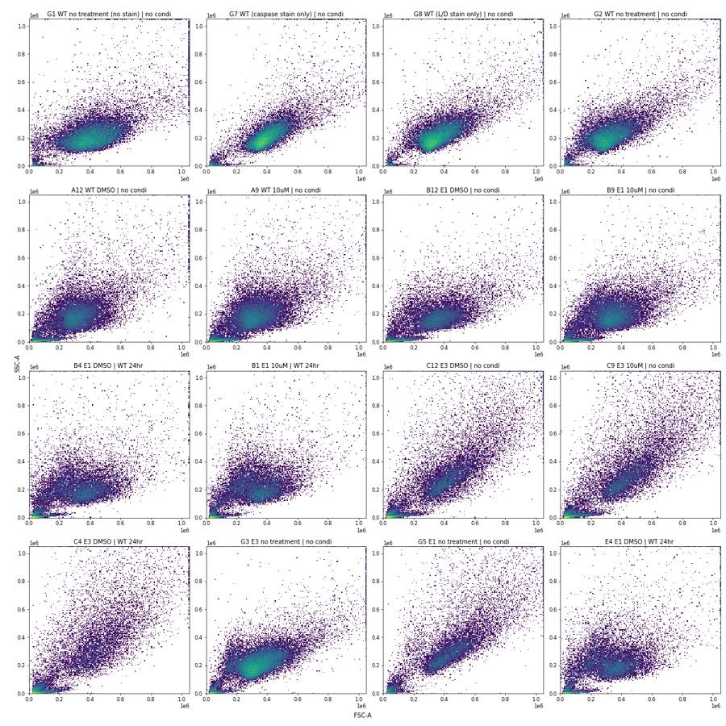
15
tool call · Read
{
"file_path": "/task/work/p_fl.png"
}16
tool output
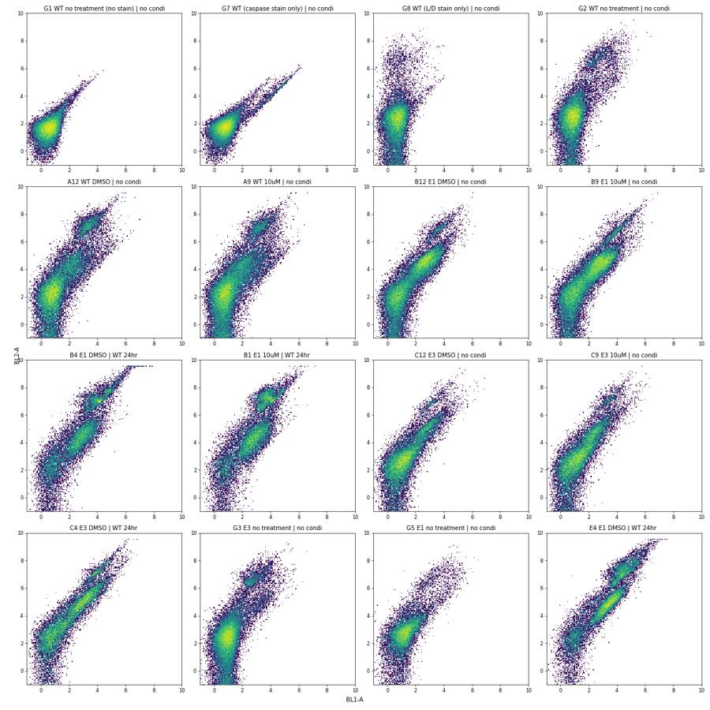
18
tool call · Bash
cd /task; cat > work/ctrl.py <<'EOF'
import sys; sys.path.insert(0,'/task/work')
from load import *
for w in ['G1','G7','G8','G2','A12','D12','B12','E4','G3','G5']:
d=load(w)
d=d[(d['FSC-A']>100000)&(d['FSC-A']<1e6)&(d['SSC-A']<1e6)]
b1=d['BL1-A'].values; b2=d['BL2-A'].values
print(w, len(d), 'BL1 pct 50/90/95/99:',np.percentile(b1,[50,90,95,99]).round(0), 'BL2:',np.percentile(b2,[50,90,95,99]).round(0))
for lo,hi in [(300,1000),(1000,3000),(3000,10000),(10000,1e6)]:
m=(b1>lo)&(b1<=hi)
if m.sum()>5:
r=b2[m]/b1[m]
print(f' BL1 {lo}-{hi}: n={m.sum()} ({100*m.mean():.2f}%) BL2/BL1 ratio pct10/50/90: {np.percentile(r,[10,50,90]).round(2)}')
for lo,hi in [(3000,20000),(20000,2e6)]:
m=(b2>lo)&(b2<=hi)
if m.sum()>5:
print(f' BL2 {lo}-{hi}: n={m.sum()} ({100*m.mean():.2f}%) BL1 pct10/50/90: {np.percentile(b1[m],[10,50,90]).round(0)}')
EOF
python3 -I work/ctrl.py19
tool output
G1 24474 BL1 pct 50/90/95/99: [ 93. 213. 258. 393.] BL2: [ 369. 752. 990. 1874.] BL1 300-1000: n=645 (2.64%) BL2/BL1 ratio pct10/50/90: [1.68 3.77 6.09] BL1 1000-3000: n=17 (0.07%) BL2/BL1 ratio pct10/50/90: [3.77 4.63 6.24] BL2 3000-20000: n=63 (0.26%) BL1 pct10/50/90: [ 402. 754. 1164.] G7 22523 BL1 pct 50/90/95/99: [ 138. 348. 772. 8888.] BL2: [ 411. 966. 1679. 8327.] BL1 300-1000: n=1856 (8.24%) BL2/BL1 ratio pct10/50/90: [1.09 2.07 3.79] BL1 1000-3000: n=383 (1.70%) BL2/BL1 ratio pct10/50/90: [0.89 1.09 1.67] BL1 3000-10000: n=438 (1.94%) BL2/BL1 ratio pct10/50/90: [0.87 0.95 1.1 ] BL1 10000-1000000.0: n=186 (0.83%) BL2/BL1 ratio pct10/50/90: [0.87 0.93 0.98] BL2 3000-20000: n=652 (2.89%) BL1 pct10/50/90: [ 2715. 6156. 13162.] BL2 20000-2000000.0: n=22 (0.10%) BL1 pct10/50/90: [22310. 25776. 31320.] G8 23035 BL1 pct 50/90/95/99: [110. 233. 279. 429.] BL2: [ 555. 2299. 6627. 74310.] BL1 300-1000: n=839 (3.64%) BL2/BL1 ratio pct10/50/90: [ 1.06 4.4 33.71] BL1 1000-3000: n=12 (0.05%) BL2/BL1 ratio pct10/50/90: [ 3.37 4.88 26.61] BL2 3000-20000: n=1104 (4.79%) BL1 pct10/50/90: [ 20. 145. 360.] BL2 20000-2000000.0: n=747 (3.24%) BL1 pct10/50/90: [ 11. 131. 313.] G2 22585 BL1 pct 50/90/95/99: [ 159. 541. 1281. 4016.] BL2: [ 744. 8101. 41901. 110622.] BL1 300-1000: n=2886 (12.78%) BL2/BL1 ratio pct10/50/90: [ 1.17 6.98 78.01] BL1 1000-3000: n=924 (4.09%) BL2/BL1 ratio pct10/50/90: [ 3.24 24.32 83.54] BL1 3000-10000: n=420 (1.86%) BL2/BL1 ratio pct10/50/90: [ 2.98 9.51 33.89] BL1 10000-1000000.0: n=10 (0.04%) BL2/BL1 ratio pct10/50/90: [ 3.62 5.69 11.64] BL2 3000-20000: n=2248 (9.95%) BL1 pct10/50/90: [ 118. 315. 1910.] BL2 20000-2000000.0: n=1616 (7.16%) BL1 pct10/50/90: [ 499. 1247. 4191.] A12 20714 BL1 pct 50/90/95/99: [ 273. 2454. 3838. 8331.] BL2: [ 1565. 66974. 112572. 202678.] BL1 300-1000: n=4675 (22.57%) BL2/BL1 ratio pct10/50/90: [ 1.33 6.34 21.43] BL1 1000-3000: n=3590 (17.33%) BL2/BL1 ratio pct10/50/90: [ 2.17 13.89 69.1 ] BL1 3000-10000: n=1397 (6.74%) BL2/BL1 ratio pct10/50/90: [ 1.71 14.52 46.25] BL1 10000-1000000.0: n=132 (0.64%) BL2/BL1 ratio pct10/50/90: [ 1.3 2.19 13.85] BL2 3000-20000: n=4733 (22.85%) BL1 pct10/50/90: [ 275. 803. 2753.] BL2 20000-2000000.0: n=3276 (15.82%) BL1 pct10/50/90: [1050. 2286. 5898.] D12 23732 BL1 pct 50/90/95/99: [ 187. 1589. 2392. 4867.] BL2: [ 838. 47964. 88546. 159932.] BL1 300-1000: n=3329 (14.03%) BL2/BL1 ratio pct10/50/90: [ 1.09 5.72 64.82] BL1 1000-3000: n=3020 (12.73%) BL2/BL1 ratio pct10/50/90: [ 3.97 29.72 77.48] BL1 3000-10000: n=699 (2.95%) BL2/BL1 ratio pct10/50/90: [ 3.07 16.63 41.94] BL1 10000-1000000.0: n=35 (0.15%) BL2/BL1 ratio pct10/50/90: [ 3.41 10.1 16.83] BL2 3000-20000: n=2856 (12.03%) BL1 pct10/50/90: [ 244. 899. 2444.] BL2 20000-2000000.0: n=2893 (12.19%) BL1 pct10/50/90: [ 882. 1749. 4202.] B12 18431 BL1 pct 50/90/95/99: [ 826. 2703. 3607. 7239.] BL2: [ 4828. 18307. 47938. 116326.] BL1 300-1000: n=6106 (33.13%) BL2/BL1 ratio pct10/50/90: [ 2. 5.88 11.45] BL1 1000-3000: n=6438 (34.93%) BL2/BL1 ratio pct10/50/90: [ 2.64 5.67 16.08] BL1 3000-10000: n=1385 (7.51%) BL2/BL1 ratio pct10/50/90: [ 2.48 5.42 26.01] BL1 10000-1000000.0: n=79 (0.43%) BL2/BL1 ratio pct10/50/90: [ 2.12 6.51 15.85] BL2 3000-20000: n=9810 (53.23%) BL1 pct10/50/90: [ 536. 1194. 2595.] BL2 20000-2000000.0: n=1692 (9.18%) BL1 pct10/50/90: [1448. 3013. 7400.] E4 13969 BL1 pct 50/90/95/99: [ 2641. 8928. 13974. 25878.] BL2: [ 12832. 139038. 207717. 405973.] BL1 300-1000: n=1671 (11.96%) BL2/BL1 ratio pct10/50/90: [ 1.81 4.15 13.78] BL1 1000-3000: n=4785 (34.25%) BL2/BL1 ratio pct10/50/90: [ 2.79 4.46 12.93] BL1 3000-10000: n=5051 (36.16%) BL2/BL1 ratio pct10/50/90: [ 3.21 10.26 24.79] BL1 10000-1000000.0: n=1186 (8.49%) BL2/BL1 ratio pct10/50/90: [ 5.87 12.37 22.05] BL2 3000-20000: n=6359 (45.52%) BL1 pct10/50/90: [ 928. 2003. 3903.] BL2 20000-2000000.0: n=5323 (38.11%) BL1 pct10/50/90: [ 2948. 5854. 15863.] G3 31829 BL1 pct 50/90/95/99: [ 187. 865. 1741. 4342.] BL2: [ 748. 12301. 48039. 114533.] BL1 300-1000: n=5051 (15.87%) BL2/BL1 ratio pct10/50/90: [ 0.67 5.54 53.59] BL1 1000-3000: n=2071 (6.51%) BL2/BL1 ratio pct10/50/90: [ 3.5 20.7 66.57] BL1 3000-10000: n=642 (2.02%) BL2/BL1 ratio pct10/50/90: [ 2.74 8.43 38.67] BL1 10000-1000000.0: n=56 (0.18%) BL2/BL1 ratio pct10/50/90: [1.26 4.74 9.07] BL2 3000-20000: n=3407 (10.70%) BL1 pct10/50/90: [ 172. 488. 2371.] BL2 20000-2000000.0: n=2599 (8.17%) BL1 pct10/50/90: [ 683. 1306. 4306.] G5 12432 BL1 pct 50/90/95/99: [ 240. 705. 1406. 7115.] BL2: [ 1110. 5816. 23509. 98561.] BL1 300-1000: n=3757 (30.22%) BL2/BL1 ratio pct10/50/90: [ 1.48 4.04 13.61] BL1 1000-3000: n=480 (3.86%) BL2/BL1 ratio pct10/50/90: [ 2.69 9.7 52.06] BL1 3000-10000: n=321 (2.58%) BL2/BL1 ratio pct10/50/90: [ 3.08 7.91 28.4 ] BL1 10000-1000000.0: n=50 (0.40%) BL2/BL1 ratio pct10/50/90: [ 2.71 5.8 12.35] BL2 3000-20000: n=1433 (11.53%) BL1 pct10/50/90: [ 199. 490. 1903.] BL2 20000-2000000.0: n=667 (5.37%) BL1 pct10/50/90: [ 800. 2369. 9105.]
21
thinking
Read all 80 files and confirmed BL1 is the caspase-3/7 channel (its stored label "AAV-GFP" is stale) and BL2 the dead-cell stain. Next I'm viewing every well to set gates and flag problem wells.
22
tool call · Bash
cd /task; cat > work/plot2.py <<'EOF'
import sys; sys.path.insert(0,'/task/work')
from load import *
import matplotlib; matplotlib.use('Agg'); import matplotlib.pyplot as plt
L=lay.set_index('well')
def grid(rows, fn, xc, yc, tx, ty, xl, yl, comp=True, pre=None):
fig,axs=plt.subplots(len(rows),12,figsize=(36,3*len(rows)),squeeze=False)
for i,r in enumerate(rows):
for j in range(12):
ax=axs[i,j]; w=f'{r}{j+1}'
if w not in L.index: ax.axis('off'); continue
d=load(w)
if comp: d['BL2-A']=d['BL2-A']-0.93*d['BL1-A']
if pre is not None: d=pre(d)
ax.hist2d(tx(d[xc].values),ty(d[yc].values),bins=120,norm=matplotlib.colors.LogNorm(),cmap='viridis',range=[xl,yl])
ax.set_title(f"{w} {L.loc[w,'sample']}|{L.loc[w,'conditioned_media'][:7]}",fontsize=9)
plt.tight_layout(); plt.savefig(fn,dpi=50); plt.close()
a=lambda v: np.arcsinh(v/150)
idt=lambda v:v
pre=lambda d: d[(d['FSC-A']>80000)&(d['FSC-A']<1.04e6)&(d['SSC-A']<1.04e6)]
for rows,tag in [('ABC','1'),('DEF','2'),('G','3')]:
grid(rows,f'work/g_fl_{tag}.png','BL1-A','BL2-A',a,a,[-1,9],[-2,9],pre=pre)
grid(rows,f'work/g_sc_{tag}.png','FSC-A','SSC-A',idt,idt,[0,1.05e6],[0,1.05e6],comp=False)
EOF
python3 -I work/plot2.py23
tool call · Read
{
"file_path": "/task/work/g_fl_1.png"
}24
tool call · Read
{
"file_path": "/task/work/g_fl_2.png"
}25
tool call · Read
{
"file_path": "/task/work/g_fl_3.png"
}26
tool output
(Bash completed with no output)
27
tool output
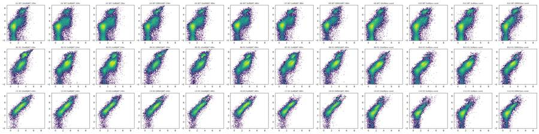
28
tool output
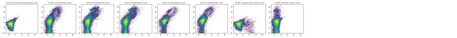
29
tool output
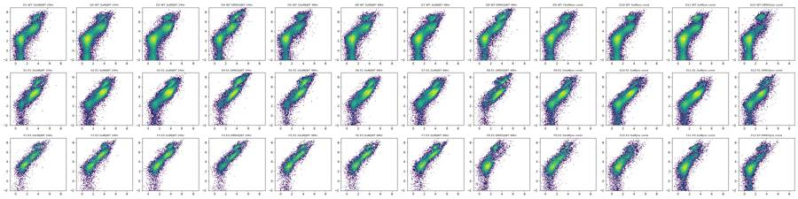
31
tool call · Read
{
"file_path": "/task/work/g_sc_1.png"
}32
tool output
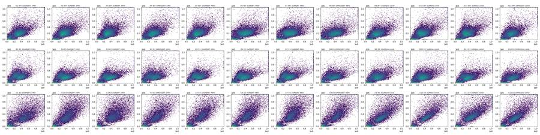
33
tool call · Read
{
"file_path": "/task/work/g_sc_2.png"
}34
tool output
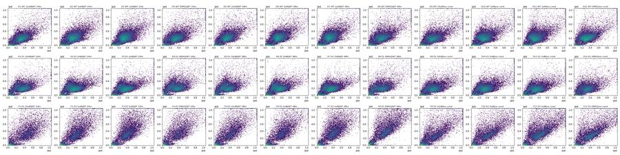
35
tool call · Read
{
"file_path": "/task/work/g_sc_3.png"
}36
tool output
38
tool call · Bash
cd /task; cat > work/plot3.py <<'EOF'
import sys; sys.path.insert(0,'/task/work')
from load import *
import matplotlib; matplotlib.use('Agg'); import matplotlib.pyplot as plt
L=lay.set_index('well')
groups={'WT':['A12','D12','A9','G2','G1','G7','G8'],'E1':['B12','E12','B4','E4','B9'],'E3':['C12','F12','C4','F8','F2'],'G':['G3','G4','G5','G6']}
fig,axs=plt.subplots(4,4,figsize=(24,20))
a=lambda v: np.arcsinh(v/150)
for i,(g,ws) in enumerate(groups.items()):
for w in ws:
d=load(w)
axs[i,0].hist(d['FSC-A'],bins=200,range=(0,1.05e6),histtype='step',label=w,density=True)
axs[i,1].hist(d['SSC-A'],bins=200,range=(0,1.05e6),histtype='step',label=w,density=True)
d=d[(d['FSC-A']>100000)&(d['FSC-A']<1.04e6)&(d['SSC-A']<1.04e6)]
axs[i,2].hist(a(d['BL2-A']-0.93*d['BL1-A']),bins=200,range=(-2,9),histtype='step',label=w,density=True)
axs[i,3].hist(a(d['BL1-A']),bins=200,range=(-2,9),histtype='step',label=w,density=True)
for k in range(4): axs[i,k].legend(); axs[i,k].set_title(g+' '+['FSC-A','SSC-A','BL2comp asinh','BL1 asinh'][k])
axs[i,0].set_yscale('log');axs[i,1].set_yscale('log')
plt.tight_layout(); plt.savefig('work/p_hist.png',dpi=55)
# singlets
fig,axs=plt.subplots(2,4,figsize=(24,12))
for ax,w in zip(axs.flat,['A12','B12','C12','E4','F8','G5','G1','A1']):
d=load(w)
ax.hist2d(d['FSC-A'],d['FSC-H'],bins=200,norm=matplotlib.colors.LogNorm(),range=[[0,1.05e6],[0,1.05e6]])
ax.set_title(w)
plt.tight_layout(); plt.savefig('work/p_sing.png',dpi=55)
fig,axs=plt.subplots(2,4,figsize=(24,12))
for ax,w in zip(axs.flat,['A12','B12','C12','E4','F8','G5','G1','A1']):
d=load(w)
ax.hist2d(d['FSC-A'],d['FSC-A']/np.maximum(d['FSC-H'],1),bins=200,norm=matplotlib.colors.LogNorm(),range=[[0,1.05e6],[0.5,2.5]])
ax.set_title(w)
plt.tight_layout(); plt.savefig('work/p_sing2.png',dpi=55)
EOF
python3 -I work/plot3.py39
tool call · Read
{
"file_path": "/task/work/p_hist.png"
}40
tool call · Read
{
"file_path": "/task/work/p_sing.png"
}41
tool call · Read
{
"file_path": "/task/work/p_sing2.png"
}42
tool output
(Bash completed with no output)
43
tool output
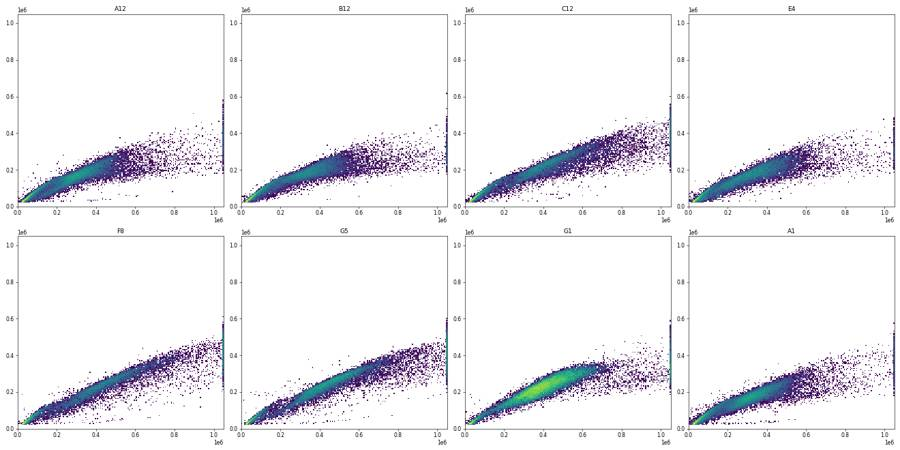
44
tool output
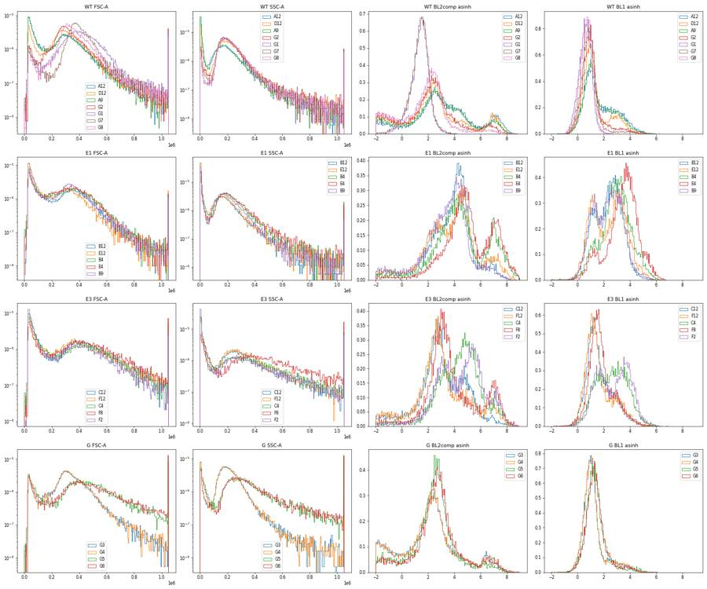
45
tool output
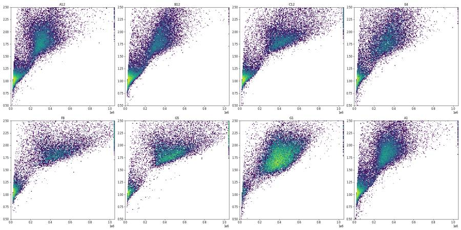
47
agent
Still working: scatter and fluorescence gates are scoped; I'm now checking the best singlet discriminator, then building the FlowKit gating strategy and per-well counts.
48
tool call · Bash
cd /task; cat > work/plot4.py <<'EOF'
import sys; sys.path.insert(0,'/task/work')
from load import *
import matplotlib; matplotlib.use('Agg'); import matplotlib.pyplot as plt
ws=['A12','B12','C12','E4','F8','G1']
fig,axs=plt.subplots(4,6,figsize=(30,20))
for j,w in enumerate(ws):
d=load(w)
d=d[(d['FSC-A']>120000)&(d['FSC-A']<1.04e6)&(d['SSC-A']<1.04e6)]
axs[0,j].hist2d(d['FSC-A'],d['FSC-H'],bins=200,norm=matplotlib.colors.LogNorm(),range=[[0,1.05e6],[0,6e5]]); axs[0,j].set_title(w+' FSC-A vs FSC-H')
axs[1,j].hist2d(d['FSC-A'],d['FSC-W'],bins=200,norm=matplotlib.colors.LogNorm(),range=[[0,1.05e6],[0,1024]]); axs[1,j].set_title('FSC-A vs FSC-W')
axs[2,j].hist2d(d['SSC-A'],d['SSC-H'],bins=200,norm=matplotlib.colors.LogNorm(),range=[[0,1.05e6],[0,1.05e6]]); axs[2,j].set_title('SSC-A vs SSC-H')
axs[3,j].hist2d(d['FSC-H'],d['FSC-W'],bins=200,norm=matplotlib.colors.LogNorm(),range=[[0,6e5],[0,1024]]); axs[3,j].set_title('FSC-H vs FSC-W')
print(w, np.percentile(d['FSC-W'],[1,5,25,50,75,95,99]).round(0), np.percentile(d['SSC-W'],[1,5,25,50,75,95,99]).round(0))
plt.tight_layout(); plt.savefig('work/p_sing3.png',dpi=50)
EOF
python3 -I work/plot4.py49
tool call · Read
{
"file_path": "/task/work/p_sing3.png"
}50
tool output
A12 [ 90. 108. 121. 135. 151. 185. 265.] [ 50. 75. 122. 128. 137. 175. 248.] B12 [ 93. 106. 129. 146. 159. 197. 260.] [ 48. 58. 120. 129. 139. 182. 244.] C12 [ 96. 111. 131. 148. 161. 188. 252.] [ 49. 77. 128. 136. 146. 174. 232.] E4 [ 88. 105. 126. 144. 158. 189. 249.] [ 53. 112. 124. 131. 143. 185. 252.] F8 [ 90. 110. 129. 144. 158. 177. 233.] [ 64. 117. 132. 139. 148. 165. 202.] G1 [102. 121. 136. 145. 153. 168. 232.] [113. 119. 124. 129. 136. 154. 217.]
51
tool output
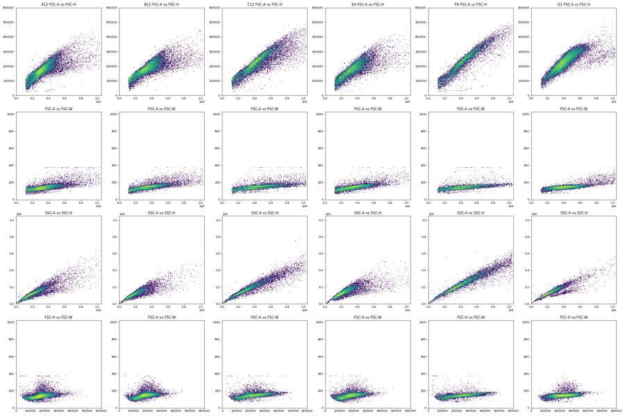
53
tool call · Bash
cd /task; cat > work/plot5.py <<'EOF'
import sys; sys.path.insert(0,'/task/work')
from load import *
import matplotlib; matplotlib.use('Agg'); import matplotlib.pyplot as plt
sets={'WT':['A12','D12','A9','G2','G1','G7','G8','A1','D4'],'E1':['B12','E12','B4','E4','B9','G3','G4'],'E3':['C12','F12','C4','F8','F2','G5','G6']}
fig,axs=plt.subplots(2,3,figsize=(27,16))
for j,(g,ws) in enumerate(sets.items()):
d=pd.concat([load(w) for w in ws])
d=d[(d['FSC-A']>100000)&(d['FSC-A']<1.04e6)&(d['SSC-A']<1.04e6)]
axs[0,j].hist2d(d['FSC-A'],d['FSC-H'],bins=250,norm=matplotlib.colors.LogNorm(),range=[[0,1.05e6],[0,6e5]]); axs[0,j].set_title(g)
axs[0,j].grid(True,alpha=.4)
axs[1,j].hist2d(d['FSC-A'],d['FSC-H']/d['FSC-A'],bins=250,norm=matplotlib.colors.LogNorm(),range=[[0,1.05e6],[0.2,1.0]]); axs[1,j].grid(True,alpha=.4)
for lo in range(200000,1000001,100000):
m=(d['FSC-A']>lo-50000)&(d['FSC-A']<lo+50000)
r=(d['FSC-H']/d['FSC-A'])[m]
h,e=np.histogram(r,bins=40,range=(0.2,1.0))
print(g,lo,m.sum(),' '.join(f'{x:4d}' for x in h[2:30]))
plt.tight_layout(); plt.savefig('work/p_sing4.png',dpi=50)
EOF
python3 -I work/plot5.py54
tool call · Read
{
"file_path": "/task/work/p_sing4.png"
}55
tool output
WT 200000 26937 15 31 33 64 91 153 215 309 460 766 1264 2002 2408 2457 2101 1687 1382 1292 1311 1283 1260 1085 895 765 684 607 532 492 WT 300000 72286 9 17 30 55 78 133 213 454 834 1693 3156 4969 6723 8249 8655 8807 8627 7630 5565 3148 1638 806 377 187 58 51 21 18 WT 400000 56042 22 40 45 97 115 217 419 721 1324 2152 3203 4629 6036 7005 7594 7552 6309 4137 2250 1134 578 219 87 39 18 5 2 0 WT 500000 23844 58 119 153 219 322 428 606 741 913 1050 1410 1724 2378 2996 3492 3155 2036 1058 516 273 100 33 5 2 1 0 0 1 WT 600000 8567 84 162 308 372 344 304 294 294 318 425 522 811 1018 1164 1113 592 284 85 30 3 0 1 0 0 0 0 0 0 WT 700000 3482 93 217 284 265 195 177 151 170 163 239 269 359 361 258 152 52 16 5 0 1 3 0 0 0 0 0 0 0 WT 800000 1914 113 168 188 204 138 120 109 89 110 118 131 131 107 60 18 8 4 1 0 0 0 0 0 0 0 0 0 0 WT 900000 1144 82 103 139 109 103 64 51 59 66 71 72 61 25 14 3 3 2 0 0 0 0 0 0 0 0 0 0 0 WT 1000000 671 62 88 96 64 44 33 26 37 38 32 32 16 7 2 1 1 0 0 0 0 0 0 0 0 0 0 0 0 E1 200000 22873 12 30 44 81 107 139 185 250 338 501 794 1173 1596 1698 1585 1471 1321 1336 1343 1383 1254 1115 942 775 615 533 482 439 E1 300000 50616 19 21 39 63 92 117 181 289 461 873 1602 3021 4854 6334 7175 6785 5995 4907 3638 2189 1124 440 183 76 39 13 12 10 E1 400000 36622 28 29 47 84 120 201 337 620 995 1447 2063 2757 3795 4739 5189 5217 4305 2692 1282 419 116 35 15 7 1 3 2 0 E1 500000 16379 28 68 116 207 279 440 579 721 803 830 1098 1292 1502 1922 2247 2149 1314 529 139 47 9 6 2 0 0 0 0 0 E1 600000 5988 62 156 259 334 325 342 315 335 334 344 337 476 520 566 571 424 195 38 11 1 0 0 0 0 0 0 0 0 E1 700000 2530 89 202 242 282 244 182 136 129 114 114 129 140 144 153 108 45 25 3 2 1 0 0 0 0 0 0 0 0 E1 800000 1303 94 136 152 161 160 97 70 61 52 46 50 54 58 25 9 4 3 1 1 0 0 0 0 0 0 0 0 0 E1 900000 758 74 90 100 109 79 51 38 27 24 19 16 14 11 4 0 0 1 0 0 0 0 0 0 0 0 0 0 0 E1 1000000 441 67 48 59 59 30 19 14 14 20 17 12 5 0 0 0 1 0 0 0 0 0 0 0 0 0 0 0 0 E3 200000 7584 11 23 26 49 75 96 141 175 182 233 289 382 426 406 373 404 319 332 324 330 328 300 317 282 292 280 266 224 E3 300000 13009 16 17 25 43 62 71 131 159 244 325 562 806 1104 1313 1467 1427 1332 1415 1242 694 275 106 53 24 14 14 10 4 E3 400000 18854 12 21 30 31 57 88 171 308 455 648 771 986 1259 1727 2305 2846 3293 2482 1012 213 49 21 5 0 1 0 3 0 E3 500000 14967 8 14 33 44 101 243 290 416 478 593 711 790 1096 1645 2482 2945 2181 704 104 17 3 0 4 0 1 2 1 0 E3 600000 9564 10 29 85 102 154 234 275 336 459 474 567 694 986 1518 1789 1264 454 80 18 4 1 0 2 0 0 0 0 0 E3 700000 5561 25 42 59 102 129 155 231 305 370 430 479 621 744 875 643 273 47 7 2 2 0 0 0 0 0 0 0 0 E3 800000 3250 26 43 66 114 116 138 185 232 263 283 331 446 453 339 154 30 4 1 1 0 0 0 0 0 0 0 0 0 E3 900000 1816 24 25 49 75 87 103 148 150 181 189 247 243 178 66 26 3 1 0 0 1 0 0 0 0 0 0 0 0 E3 1000000 1010 14 27 52 49 62 67 70 86 119 132 147 99 48 15 1 0 0 0 0 0 0 0 0 0 0 0 0 0
56
tool output
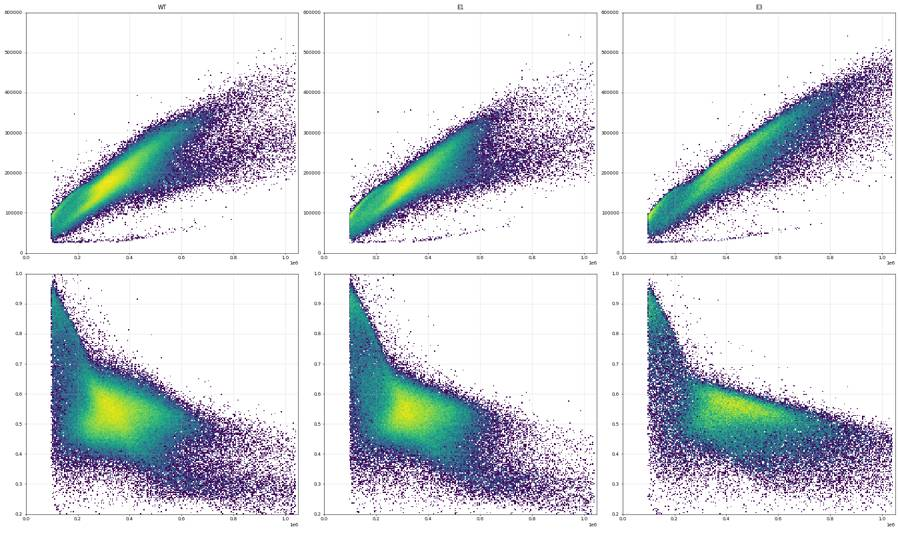
58
tool call · Bash
cd /task; cat > work/explore.py <<'EOF'
import sys; sys.path.insert(0,'/task/work')
from load import *
from matplotlib.path import Path
L=lay.set_index('well')
# spill estimates
d=load('G7'); d=d[(d['FSC-A']>120000)&(d['FSC-A']<1.04e6)&(d['SSC-A']<1.04e6)&(d['SSC-A']>50000)]
neg=d[d['BL1-A']<300]; pos=d[d['BL1-A']>3000]
print('G7 neg med',neg[['BL1-A','BL2-A']].median().values,'n pos',len(pos))
s=(pos['BL2-A']-neg['BL2-A'].median())/(pos['BL1-A']-neg['BL1-A'].median())
print('BL1->BL2 spill pct 10/25/50/75/90',np.percentile(s,[10,25,50,75,90]).round(3))
import numpy.linalg as la
x=pos['BL1-A'].values;y=pos['BL2-A'].values
print('ols slope',np.polyfit(x,y,1))
d=load('G8'); d=d[(d['FSC-A']>120000)&(d['FSC-A']<1.04e6)&(d['SSC-A']<1.04e6)&(d['SSC-A']>50000)]
neg=d[d['BL2-A']<1500]; pos=d[d['BL2-A']>20000]
print('G8 neg med',neg[['BL1-A','BL2-A']].median().values,'pos med',pos[['BL1-A','BL2-A']].median().values,len(pos))
s=(pos['BL1-A']-neg['BL1-A'].median())/(pos['BL2-A']-neg['BL2-A'].median())
print('BL2->BL1 spill',np.percentile(s,[10,25,50,75,90]).round(5), np.polyfit(pos['BL2-A'],pos['BL1-A'],1))
EOF
python3 -I work/explore.py59
tool output
G7 neg med [123. 382.] n pos 615 BL1->BL2 spill pct 10/25/50/75/90 [0.824 0.863 0.909 0.947 1.023] ols slope [ 0.91589854 270.53389038] G8 neg med [105. 408.] pos med [ 133. 54747.] 715 BL2->BL1 spill [-0.00198 -0.00073 0.00042 0.0018 0.00447] [2.19591736e-04 1.47225740e+02]
61
tool call · Bash
cd /task; python3 -I -c " import flowkit as fk, inspect print(fk.__version__) print(inspect.signature(fk.Matrix.__init__)) print(inspect.signature(fk.GatingStrategy.add_comp_matrix)) print(inspect.signature(fk.GatingStrategy.add_transform)) print(inspect.signature(fk.GatingStrategy.add_gate)) print(inspect.signature(fk.GatingStrategy.gate_sample)) print(inspect.signature(fk.Dimension.__init__)) print(inspect.signature(fk.transforms.LogicleTransform.__init__)) print(inspect.signature(fk.gates.PolygonGate.__init__)) print(inspect.signature(fk.gates.RectangleGate.__init__)) print(inspect.signature(fk.Sample.__init__)) print(inspect.signature(fk.export_gatingml)) "
62
tool output
1.2.3 (self, spill_data_or_file, detectors, fluorochromes=None, null_channels=None) (self, matrix_id, matrix) (self, transform_id, transform) (self, gate, gate_path, sample_id=None) (self, sample, cache_events=False, verbose=False) (self, dimension_id, compensation_ref='uncompensated', transformation_ref=None, range_min=None, range_max=None) (self, param_t, param_w, param_m, param_a) (self, gate_name, dimensions, vertices, use_complement=False) (self, gate_name, dimensions, use_complement=False) (self, fcs_path_or_data, sample_id=None, filename_as_id=False, channel_labels=None, compensation=None, null_channel_list=None, ignore_offset_error=False, ignore_offset_discrepancy=False, use_header_offsets=False, cache_original_events=False, subsample=10000) (gating_strategy, file_handle, sample_id=None)
64
tool call · Bash
cd /task; cat > work/explore2.py <<'EOF'
import sys; sys.path.insert(0,'/task/work')
from load import *
from matplotlib.path import Path
L=lay.set_index('well')
cells_poly=Path([(120e3,50e3),(120e3,450e3),(450e3,1.04e6),(1.04e6,1.04e6),(1.04e6,50e3)])
sing_poly=Path([(100e3,35e3),(300e3,115e3),(500e3,195e3),(700e3,258e3),(1.04e6,345e3),(1.05e6,600e3),(700e3,440e3),(400e3,290e3),(200e3,175e3),(90e3,110e3)])
rows=[]
for w in L.index:
d=load(w)
c=d[cells_poly.contains_points(d[['FSC-A','SSC-A']].values)]
s=c[sing_poly.contains_points(c[['FSC-A','FSC-H']].values)].copy()
s['b2']=s['BL2-A']-0.916*s['BL1-A']
r=dict(well=w,cl=L.loc[w,'cell_line'],cpt=L.loc[w,'camptothecin'],cm=L.loc[w,'conditioned_media'][:8],n=len(d),cells=100*len(c)/len(d),sing=100*len(s)/len(c),nsing=len(s))
r['dead']=100*(s.b2>30000).mean()
r['dim']=100*((s.b2>3000)&(s.b2<=30000)).mean()
live=s[s.b2<=30000]; neg=s[s.b2<=3000]
for T in (500,700,1000):
r[f'c{T}_live']=100*(live['BL1-A']>T).mean()
r['c700_all']=100*(s['BL1-A']>700).mean()
r['c700_neg']=100*(neg['BL1-A']>700).mean()
r['negmedBL1']=neg['BL1-A'].median()
r['hi_SSC/FSC']=(s['SSC-A']/s['FSC-A']).median()
rows.append(r)
df=pd.DataFrame(rows)
pd.set_option('display.width',300); pd.set_option('display.max_rows',200)
print(df.round(1).to_string())
df.to_csv('work/explore.csv',index=False)
EOF
python3 -I work/explore2.py65
tool output
well cl cpt cm n cells sing nsing dead dim c500_live c700_live c1000_live c700_all c700_neg negmedBL1 hi_SSC/FSC 0 A1 WT 10uM WT 24hr 31328 62.9 94.0 18531 10.4 17.1 24.6 19.3 13.6 27.0 10.8 155.0 0.6 1 A2 WT 5uM WT 24hr 40169 69.6 93.0 26007 7.9 15.8 26.9 22.7 18.2 28.2 13.0 157.0 0.6 2 A3 WT 2uM WT 24hr 47337 64.9 93.6 28769 8.7 15.1 26.9 23.0 18.2 28.7 13.7 159.0 0.6 3 A4 WT DMSO WT 24hr 33079 69.2 93.4 21363 11.3 20.6 35.5 29.3 21.5 37.1 16.5 177.0 0.6 4 A5 WT 10uM WT 48hr 34963 69.2 93.4 22582 9.4 18.9 28.8 23.8 18.2 30.6 12.4 164.0 0.6 5 A6 WT 5uM WT 48hr 33431 72.9 94.2 22964 8.2 22.1 26.7 22.7 18.0 28.5 10.1 157.0 0.5 6 A7 WT 2uM WT 48hr 36445 73.6 94.4 25336 9.2 21.2 25.3 21.6 17.3 28.4 8.7 153.0 0.5 7 A8 WT DMSO WT 48hr 22867 72.2 94.5 15596 11.4 22.9 28.4 23.6 17.7 32.0 9.5 160.0 0.5 8 A9 WT 10uM no condi 40034 59.5 92.3 21988 9.8 20.2 26.2 20.0 14.0 27.6 9.4 166.0 0.6 9 A10 WT 5uM no condi 42298 66.5 93.4 26286 11.5 17.3 22.8 18.5 14.3 27.4 7.8 155.0 0.6 10 A11 WT 2uM no condi 43376 64.3 93.9 26198 12.2 17.3 23.9 20.0 15.5 29.3 8.1 154.0 0.6 11 A12 WT DMSO no condi 30724 60.8 91.5 17101 13.0 21.4 26.8 20.5 14.0 30.7 8.2 163.0 0.6 12 B1 E1 10uM WT 24hr 18757 72.5 93.5 12727 27.7 37.8 79.2 68.4 52.0 77.1 47.5 669.0 0.6 13 B2 E1 5uM WT 24hr 32477 69.6 93.5 21131 13.3 49.0 75.8 70.2 60.4 74.1 39.2 439.0 0.5 14 B3 E1 2uM WT 24hr 40067 66.4 93.2 24781 15.1 52.9 80.2 75.7 67.1 79.3 45.6 553.5 0.5 15 B4 E1 DMSO WT 24hr 19965 65.0 91.4 11861 22.5 43.7 78.2 68.6 53.2 75.6 42.7 601.5 0.6 16 B5 E1 10uM WT 48hr 17852 75.9 94.1 12761 21.7 46.8 79.4 69.9 55.8 76.4 43.0 607.0 0.6 17 B6 E1 5uM WT 48hr 31705 70.1 93.5 20786 14.5 52.5 77.4 71.2 61.1 75.3 38.3 440.0 0.5 18 B7 E1 2uM WT 48hr 35417 67.1 94.0 22336 17.3 55.0 79.2 74.1 65.2 78.6 39.0 390.0 0.5 19 B8 E1 DMSO WT 48hr 26222 63.1 90.9 15042 13.9 57.4 80.8 74.3 63.6 77.9 41.2 522.0 0.5 20 B9 E1 10uM no condi 34411 62.5 92.1 19797 5.8 44.1 63.2 53.7 40.5 56.4 24.6 319.0 0.6 21 B10 E1 5uM no condi 40098 62.5 91.8 23003 3.3 47.2 63.9 54.7 41.2 56.2 24.2 306.0 0.5 22 B11 E1 2uM no condi 41005 57.8 92.4 21907 5.6 51.7 71.3 63.4 49.8 65.5 33.1 378.0 0.5 23 B12 E1 DMSO no condi 31680 49.8 89.5 14126 6.4 55.9 69.5 58.2 42.4 60.9 23.5 324.0 0.5 24 C1 E3 10uM WT 24hr 17681 56.6 89.6 8961 12.9 60.3 66.1 54.8 42.2 60.6 6.8 304.0 0.7 25 C2 E3 5uM WT 24hr 25455 48.7 88.4 10956 11.5 56.5 67.6 57.5 47.1 62.4 12.1 346.0 0.8 26 C3 E3 2uM WT 24hr 21098 57.4 91.4 11080 10.0 56.2 57.8 47.7 38.1 52.8 3.2 280.0 0.8 27 C4 E3 DMSO WT 24hr 18113 51.4 85.5 7951 12.6 57.9 66.6 56.3 44.3 61.8 9.3 323.0 0.8 28 C5 E3 10uM WT 48hr 18729 49.2 85.3 7865 11.1 54.5 60.5 49.0 38.2 54.7 6.4 318.0 0.8 29 C6 E3 5uM WT 48hr 21716 49.9 86.9 9414 8.8 58.9 63.9 53.0 41.9 57.1 4.6 319.0 0.8 30 C7 E3 2uM WT 48hr 22874 51.2 89.5 10490 6.1 53.2 56.2 45.1 36.0 48.4 3.5 304.0 0.8 31 C8 E3 DMSO WT 48hr 18604 51.0 85.4 8105 10.3 53.6 57.4 46.7 35.3 52.2 4.9 313.0 0.8 32 C9 E3 10uM no condi 22962 58.1 92.0 12286 5.1 32.1 33.2 21.4 11.8 25.4 3.1 239.0 0.7 33 C10 E3 5uM no condi 15794 63.4 94.1 9422 3.4 20.4 24.6 14.9 9.1 17.7 2.6 242.0 0.7 34 C11 E3 2uM no condi 19854 65.0 95.3 12292 2.8 18.5 20.5 13.4 8.9 15.6 1.9 236.0 0.7 35 C12 E3 DMSO no condi 23104 57.9 92.3 12346 3.2 28.3 29.4 21.6 14.9 23.9 2.7 225.0 0.7 36 D1 WT 10uM WT 24hr 29965 64.6 94.9 18382 9.3 30.8 37.8 34.6 29.6 40.7 7.3 166.0 0.6 37 D2 WT 5uM WT 24hr 42557 66.8 93.9 26696 7.4 26.5 29.6 26.9 23.7 32.3 3.6 162.0 0.6 38 D3 WT 2uM WT 24hr 44711 65.5 93.7 27448 8.6 28 … [6,311 more characters not shown]
67
thinking
Conditioned media raises caspase-positive cells in the KO lines rather than lowering them, and camptothecin shows no dose-response. I'm running acquisition QC and checking a possible label swap in row G before finalising the gates.
68
tool call · Bash
cd /task; cat > work/qc.py <<'EOF'
import sys; sys.path.insert(0,'/task/work')
from load import *
L=lay.set_index('well')
rows=[]
for w in L.index:
d=load(w)
t=d['Time'].values
h,_=np.histogram(t,bins=16,range=(0,t.max()))
# max gap
ts=np.sort(t); gap=np.diff(ts).max()
mono=(np.diff(t)<0).sum()
# BL1 drift: median in first vs last third (cells only)
c=d[(d['FSC-A']>120000)&(d['FSC-A']<1.04e6)]
q=np.quantile(c.Time,[1/3,2/3])
m1=c[c.Time<q[0]]['BL1-A'].median(); m3=c[c.Time>q[1]]['BL1-A'].median()
f1=c[c.Time<q[0]]['FSC-A'].median(); f3=c[c.Time>q[1]]['FSC-A'].median()
rows.append(dict(well=w,n=len(d),tmin=t.min(),tmax=t.max(),maxgap=gap,cv_rate=h.std()/h.mean(),minbin=h.min()/h.mean(),maxbin=h.max()/h.mean(),first=h[0]/h.mean(),last=h[-1]/h.mean(),bl1_first=m1,bl1_last=m3,fsc_first=f1,fsc_last=f3,
fsc_sat=100*(d['FSC-A']>=1048575).mean(), ssc_sat=100*(d['SSC-A']>=1048575).mean(), bl2_sat=100*(d['BL2-A']>=1048575).mean(), debris=100*(d['FSC-A']<120000).mean()))
df=pd.DataFrame(rows)
pd.set_option('display.width',300); pd.set_option('display.max_rows',200)
print(df.round(2).to_string())
df.to_csv('work/qc.csv',index=False)
EOF
python3 -I work/qc.py69
tool output
well n tmin tmax maxgap cv_rate minbin maxbin first last bl1_first bl1_last fsc_first fsc_last fsc_sat ssc_sat bl2_sat debris 0 A1 31328 14.0 15980.0 10.0 0.13 0.80 1.24 0.91 0.80 238.0 235.0 327527.00000 336387.00000 0.85 0.77 0.01 32.51 1 A2 40169 15.0 16706.0 6.0 0.14 0.81 1.26 0.86 0.86 231.0 232.0 332082.50000 335355.00000 0.57 0.69 0.00 25.57 2 A3 47337 15.0 16851.0 7.0 0.14 0.82 1.27 0.89 0.82 245.0 238.0 304088.00000 309876.00000 0.43 0.61 0.00 29.57 3 A4 33079 14.0 16632.0 12.0 0.14 0.77 1.32 0.77 0.90 355.0 361.0 317987.00000 326450.00000 0.95 1.08 0.02 26.38 4 A5 34963 15.0 16749.0 35.0 0.16 0.79 1.33 0.79 0.85 254.0 251.0 309484.00000 312496.50000 0.70 0.82 0.00 26.26 5 A6 33431 14.0 15660.0 6.0 0.15 0.81 1.25 0.83 0.81 239.0 229.0 398776.00000 393088.00000 1.14 0.80 0.01 21.61 6 A7 36445 15.0 16841.0 5.0 0.17 0.72 1.27 0.72 0.78 233.0 236.0 386400.46875 388837.53125 0.82 0.64 0.00 21.46 7 A8 22867 15.0 15832.0 9.0 0.18 0.69 1.30 0.70 0.69 260.0 251.0 403703.53125 396734.00000 1.51 1.30 0.05 22.59 8 A9 40034 14.0 16671.0 8.0 0.15 0.76 1.35 0.86 0.76 257.0 251.0 318244.00000 316286.50000 0.92 0.79 0.01 34.62 9 A10 42298 14.0 16647.0 13.0 0.17 0.71 1.32 0.79 0.71 229.0 233.0 319761.00000 322081.50000 0.95 0.72 0.00 28.56 10 A11 43376 14.0 16621.0 12.0 0.13 0.60 1.16 0.94 0.60 245.0 244.0 319545.00000 326013.50000 0.85 0.74 0.00 30.18 11 A12 30724 14.0 15960.0 17.0 0.09 0.83 1.16 0.95 0.84 280.0 288.0 313004.00000 322005.00000 0.97 0.90 0.02 33.63 12 B1 18757 14.0 16702.0 29.0 0.22 0.34 1.33 0.81 0.34 1432.5 1574.5 332784.50000 344357.00000 0.28 0.39 0.04 24.58 13 B2 32477 14.0 15827.0 5.0 0.17 0.72 1.31 0.72 0.85 1461.0 1484.0 343991.00000 357850.00000 0.36 0.13 0.00 26.65 14 B3 40067 14.0 16738.0 10.0 0.15 0.74 1.27 0.86 0.74 1736.0 1748.0 349986.00000 357739.00000 0.27 0.09 0.00 29.82 15 B4 19965 15.0 15884.0 22.0 0.22 0.61 1.37 0.77 0.64 1458.0 1407.0 342272.00000 354977.00000 0.63 1.00 0.32 30.99 16 B5 17852 14.0 16773.0 41.0 0.20 0.51 1.39 0.85 0.51 1533.0 1482.0 325737.00000 344063.00000 0.18 0.12 0.00 22.00 17 B6 31705 14.0 16655.0 38.0 0.23 0.31 1.36 0.91 0.31 1588.0 1542.0 339248.00000 346597.00000 0.35 0.14 0.00 26.42 18 B7 35417 14.0 15885.0 5.0 0.16 0.75 1.29 0.81 0.96 1739.0 1719.0 337013.00000 345764.00000 0.32 0.11 0.00 29.07 19 B8 26222 14.0 16718.0 22.0 0.14 0.59 1.25 0.92 0.59 1673.0 1640.0 352553.00000 363320.00000 0.47 0.29 0.01 33.00 20 B9 34411 14.0 15809.0 7.0 0.13 0.81 1.25 0.86 1.00 805.0 827.0 329510.00000 338140.00000 0.59 0.24 0.00 32.46 21 B10 40098 14.0 16698.0 29.0 0.24 0.21 1.31 0.91 0.21 816.0 818.0 330115.00000 340494.00000 0.60 0.33 0.00 32.29 22 B11 41005 14.0 16829.0 23.0 0.21 0.29 1.24 0.95 0.29 1013.0 1017.0 331072.50000 335677.00000 0.44 0.13 0.00 36.60 23 B12 31680 15.0 15942.0 5.0 0.11 0.82 1.24 0.92 0.93 870.0 847.0 342776.00000 354861.00000 0.72 0.27 0.00 43.92 24 C1 17681 15.0 16524.0 27.0 0.23 0.48 1.35 0.76 0.48 1016.5 1065.0 499323.53125 487697.00000 2.99 3.63 0.01 33.83 25 C2 25455 14.0 16788.0 9.0 0.17 0.73 1.37 0.79 0.73 1150.0 1177.0 435774.46875 439917.00000 1.88 3.58 0.00 42.44 26 C3 21098 14.0 15902.0 10.0 0.21 0.72 1.41 0.72 0.84 878.0 897.0 494319.00000 478335.00000 3.05 3.75 0.00 33.41 27 C4 18113 14.0 16821.0 10.0 0.18 0.83 1.41 0.83 0.83 1172.0 1145.0 425635.00000 434505.00000 1.99 4.10 0.02 39.40 28 C5 18729 15.0 16826.0 93.0 0.26 0.18 1.37 0.98 0.18 997.0 974.0 431608.46875 438930.46875 1.83 4.28 0.02 41.26 29 C6 21716 14.0 16470.0 46.0 0.24 0.25 1.36 0.91 0.25 1026.0 964.0 450427.00000 457774.46875 1.98 3.81 0.00 41.53 30 C7 22874 15.0 16593.0 26.0 0.25 0.25 1.38 0.86 0.25 750.5 800.0 433300.46875 441676.00000 1.73 3.59 0.00 40.95 31 C8 18604 15.0 16603.0 64.0 0.24 0.27 1.36 0.93 0.27 865.0 895.5 443781.00000 449852.46875 1.73 3.68 0.02 39.73 32 C9 22962 16.0 15839.0 8.0 0.16 0.80 1.31 0.84 0.94 370.0 367.0 433166.00000 440402.00000 3.32 4.42 0.00 31.09 33 C10 15794 14.0 16533.0 100.0 0.26 0.26 1.39 0.96 0.26 313.0 305.0 468023.00000 477557.00000 3.70 5.26 0.00 27.00 34 C11 19854 14.0 16477.0 61.0 0.28 0.16 1.42 1.01 0.16 294.0 300.5 471983.53125 469600.46875 5.31 5.38 0.00 24.41 35 C12 23104 14.0 16726.0 10.0 0.16 0.76 1.26 0.96 0.80 332.0 308.0 433841.00000 430242.46875 2.61 3.51 0.00 33.23 36 D1 29965 14.0 16622.0 73.0 0.27 0.16 1.36 0.89 0.16 … [6,959 more characters not shown]
71
tool call · Bash
cd /task; cat > work/qc2.py <<'EOF'
import sys; sys.path.insert(0,'/task/work')
from load import *
import matplotlib; matplotlib.use('Agg'); import matplotlib.pyplot as plt
L=lay.set_index('well')
fig,axs=plt.subplots(7,12,figsize=(36,18),sharex=True)
out=[]
for i,r in enumerate('ABCDEFG'):
for j in range(12):
ax=axs[i,j]; w=f'{r}{j+1}'
if w not in L.index: ax.axis('off'); continue
d=load(w); t=d.Time.values
bins=np.arange(0,17250,250)
h,_=np.histogram(t,bins=bins)
hc,_=np.histogram(t[(d['FSC-A']>120000)],bins=bins)
ax.plot(bins[:-1],h,lw=1); ax.plot(bins[:-1],hc,lw=1); ax.set_title(w,fontsize=9); ax.set_ylim(0,None)
# steady-state rate: median of bins 4..40
med=np.median(h[4:48])
low=np.where(h[2:int(t.max()//250)-1]<0.5*med)[0]
out.append((w,med*4,len(low),t.max(), h[:int(t.max()//250)].min()/med))
plt.tight_layout(); plt.savefig('work/p_rate.png',dpi=45)
for o in out:
if o[2]>0: print(o)
EOF
python3 -I work/qc2.py72
tool call · Read
{
"file_path": "/task/work/p_rate.png"
}73
tool output
('A11', 2628.0, 1, 16621.0, 0.2054794520547945)
('B1', 1174.0, 1, 16702.0, 0.0817717206132879)
('B5', 1080.0, 1, 16773.0, 0.1111111111111111)
('B6', 1952.0, 2, 16655.0, 0.09631147540983606)
('B10', 2494.0, 2, 16698.0, 0.11387329591018444)
('B11', 2564.0, 2, 16829.0, 0.10764430577223089)
('C1', 1138.0, 1, 16524.0, 0.1546572934973638)
('C5', 1198.0, 3, 16826.0, 0.06343906510851419)
('C6', 1390.0, 2, 16470.0, 0.1669064748201439)
('C7', 1434.0, 2, 16593.0, 0.1087866108786611)
('C8', 1164.0, 2, 16603.0, 0.0859106529209622)
('C10', 1020.0, 2, 16533.0, 0.06666666666666667)
('C11', 1272.0, 2, 16477.0, 0.05345911949685535)
('D1', 1932.0, 3, 16622.0, 0.047619047619047616)
('D4', 1636.0, 4, 16797.0, 0.014669926650366748)
('D6', 2174.0, 3, 16508.0, 0.014719411223551058)
('D7', 2556.0, 3, 16373.0, 0.009389671361502348)
('D9', 2314.0, 4, 16725.0, 0.006914433880726016)
('D11', 2912.0, 3, 16335.0, 0.0260989010989011)
('E2', 2330.0, 3, 16504.0, 0.01888412017167382)
('E3', 2680.0, 3, 16094.0, 0.019402985074626865)
('E4', 1256.0, 2, 15961.0, 0.06687898089171974)
('E5', 1194.0, 1, 16600.0, 0.1574539363484087)
('F10', 1058.0, 2, 16822.0, 0.1323251417769376)
('G2', 1602.0, 1, 15903.0, 0.41947565543071164)
('G4', 2208.0, 2, 16596.0, 0.02355072463768116)
('G5', 1042.0, 1, 16420.0, 0.08445297504798464)74
tool output
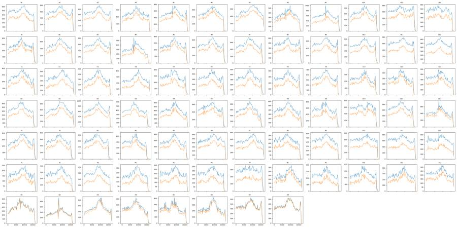
76
tool call · Bash
cd /task; cat > work/finger.py <<'EOF'
import sys; sys.path.insert(0,'/task/work')
from load import *
from matplotlib.path import Path
L=lay.set_index('well')
cells_poly=Path([(120e3,50e3),(120e3,450e3),(450e3,1.04e6),(1.04e6,1.04e6),(1.04e6,50e3)])
sing_poly=Path([(100e3,35e3),(300e3,115e3),(500e3,195e3),(700e3,258e3),(1.04e6,345e3),(1.05e6,600e3),(700e3,440e3),(400e3,290e3),(200e3,175e3),(90e3,110e3)])
rows=[]
for w in L.index:
d=load(w)
off=100*((d['FSC-A']>=1048575)|(d['SSC-A']>=1048575)).sum()/(d['FSC-A']>120000).sum()
c=d[cells_poly.contains_points(d[['FSC-A','SSC-A']].values)]
s=c[sing_poly.contains_points(c[['FSC-A','FSC-H']].values)].copy()
s['b2']=s['BL2-A']-0.916*s['BL1-A']
h=s[(s.b2<3000)&(s['BL1-A']<500)]
rows.append(dict(well=w,cl=L.loc[w,'cell_line'],n=len(h),fsc=h['FSC-A'].median(),ssc=h['SSC-A'].median(),ratio=(h['SSC-A']/h['FSC-A']).median(),
ssc_p90=h['SSC-A'].quantile(.9),hi_ssc=100*(h['SSC-A']>400e3).mean(),hA=(h['FSC-H']/h['FSC-A']).median(),fw=h['FSC-W'].median(),sw=h['SSC-W'].median(),bl1=h['BL1-A'].median(),bl2=h['b2'].median(),offscale_pct_of_cellsized=off))
df=pd.DataFrame(rows)
pd.set_option('display.width',300); pd.set_option('display.max_rows',200)
print(df.round(2).to_string())
print(df[~df.well.str.startswith('G')].groupby('cl')[['fsc','ssc','ratio','ssc_p90','hi_ssc','hA','fw','sw','bl1','bl2','offscale_pct_of_cellsized']].agg(['min','median','max']).round(2).T.to_string())
df.to_csv('work/finger.csv',index=False)
EOF
python3 -I work/finger.py77
tool output
well cl n fsc ssc ratio ssc_p90 hi_ssc hA fw sw bl1 bl2 offscale_pct_of_cellsized 0 A1 WT 11502 333625.00000 194943.50000 0.56 300803.7 2.10 0.53 134.0 128.0 135.0 479.160004 1.75 1 A2 WT 16710 326839.00000 205644.50000 0.61 314389.8 2.78 0.54 137.0 127.0 135.0 463.269989 1.27 2 A3 WT 18347 304691.00000 207653.00000 0.66 318425.0 3.26 0.53 133.0 127.0 135.0 464.190002 1.08 3 A4 WT 11505 318494.00000 190619.00000 0.58 295697.0 1.76 0.54 136.0 127.0 144.0 430.739990 1.95 4 A5 WT 13660 308463.50000 199469.50000 0.61 304008.3 2.20 0.53 132.0 127.0 140.0 414.179993 1.49 5 A6 WT 14082 397338.00000 209113.00000 0.52 308915.8 2.31 0.56 148.0 128.0 141.0 875.559998 1.88 6 A7 WT 15799 385868.00000 209302.00000 0.54 312535.0 2.63 0.55 149.0 129.0 140.0 812.659973 1.44 7 A8 WT 9001 409351.00000 203149.00000 0.49 303421.0 1.71 0.56 148.0 128.0 143.0 861.520020 2.55 8 A9 WT 13394 318681.50000 188412.50000 0.57 294326.4 1.52 0.54 134.0 127.0 147.0 447.350006 1.86 9 A10 WT 16807 319135.00000 199554.00000 0.59 306255.8 2.52 0.52 133.0 128.0 142.0 386.899994 1.68 10 A11 WT 16551 323827.00000 200591.00000 0.59 309081.0 2.43 0.53 135.0 128.0 141.0 389.450012 1.68 11 A12 WT 9909 320582.00000 194240.00000 0.59 296401.4 1.59 0.54 133.0 127.0 146.0 502.369995 1.94 12 B1 E1 1639 347095.00000 183214.00000 0.51 281904.6 0.73 0.56 141.0 126.0 227.0 674.179993 0.74 13 B2 E1 4185 343988.00000 190745.00000 0.53 292195.8 1.22 0.56 142.0 127.0 202.0 569.650024 0.57 14 B3 E1 3827 343894.00000 184268.00000 0.53 269777.6 1.25 0.56 143.0 126.0 212.0 679.340027 0.44 15 B4 E1 1727 363318.00000 180119.00000 0.49 268508.0 0.58 0.56 144.0 126.0 223.0 617.419983 1.78 16 B5 E1 1737 346119.00000 176385.00000 0.49 265867.4 1.15 0.56 139.0 126.0 218.0 631.039978 0.34 17 B6 E1 3619 342601.00000 187808.00000 0.53 279661.0 0.97 0.55 142.0 127.0 206.0 623.400024 0.55 18 B7 E1 3405 353394.00000 192884.00000 0.53 276788.2 1.03 0.55 141.0 128.0 223.0 706.619995 0.53 19 B8 E1 2112 360649.53125 173052.50000 0.47 260137.3 0.52 0.56 146.0 126.0 209.0 611.669983 0.88 20 B9 E1 6373 325514.00000 186391.00000 0.54 291092.2 1.00 0.55 140.0 126.0 214.0 600.390015 0.96 21 B10 E1 7496 323338.50000 190739.50000 0.56 290879.0 1.36 0.55 141.0 126.0 207.0 570.489990 1.00 22 B11 E1 5417 330068.00000 173752.00000 0.50 264037.0 0.66 0.56 140.0 126.0 213.0 637.450012 0.76 23 B12 E1 3414 350420.46875 183448.50000 0.51 270130.1 0.91 0.56 140.0 127.0 211.5 751.020020 1.38 24 C1 E3 1963 466307.00000 313090.00000 0.66 492719.8 26.13 0.53 153.0 135.0 266.0 1577.859985 7.76 25 C2 E3 2614 402460.00000 330540.00000 0.80 520567.3 31.14 0.56 145.0 132.0 289.0 1255.579956 7.23 26 C3 E3 3298 425978.46875 323466.00000 0.74 491488.9 26.23 0.54 149.0 132.0 259.0 1587.069946 8.02 27 C4 E3 1826 390085.53125 300945.00000 0.75 489690.0 23.49 0.56 148.0 131.0 273.0 1213.219971 7.62 28 C5 E3 2190 422610.00000 344402.00000 0.79 533135.7 34.34 0.55 150.0 133.0 280.0 1255.150024 7.88 29 C6 E3 2495 410749.00000 337689.00000 0.80 522454.8 32.55 0.56 148.0 133.0 286.0 1322.300049 7.40 30 C7 E3 3613 393327.00000 334529.00000 0.83 517872.0 30.94 0.56 146.0 132.0 275.0 1316.479980 6.92 31 C8 E3 2443 430400.00000 329760.00000 0.75 531237.0 31.11 0.55 149.0 133.0 277.0 1226.400024 6.92 32 C9 E3 6870 447896.00000 295624.50000 0.65 512001.6 23.49 0.54 150.5 134.0 220.0 841.049988 7.87 33 C10 E3 6410 464097.53125 314907.00000 0.67 512925.8 26.19 0.53 151.0 136.0 224.0 816.039978 8.68 34 C11 E3 8954 470964.46875 331362.50000 0.69 547721.6 31.33 0.51 146.0 138.0 223.0 779.229980 9.97 35 C12 E3 7747 442710.00000 296167.00000 0.66 500439.2 21.60 0.54 148.0 135.0 211.0 772.299988 6.54 36 D1 WT 9957 325189.00000 199609.00000 0.59 299129.0 1.84 0.54 136.0 127.0 154.0 435.000000 1.60 37 D2 WT 16713 320187.00000 223693.00000 0.67 340659.4 4.30 0.53 133.0 128.0 156.0 431.399994 1.41 38 D3 WT 16299 321624.00000 224920.00000 0.67 340392.6 3.99 0.53 133.0 128.0 158.0 436.019989 1.10 39 D4 WT 7926 330491.00000 201914.00000 0.59 306200.0 1.91 0.55 139.0 127.0 154.0 463.920013 2.89 40 D5 WT 10366 320343.50000 213954.50000 0.64 317249.0 2.52 0.54 137.0 128.0 157.0 565.500000 1.94 41 D6 WT 12738 312512.00000 227974.00000 0.69 336875.4 3.64 0.53 132.0 128.0 159.0 479.980011 1.87 42 D7 WT 14962 310 … [7,910 more characters not shown]
79
thinking
Row G's "E3" and "E1" untreated labels are swapped, based on the scatter fingerprint. I'm now setting the final fluorescence thresholds and building the saved FlowKit gates.
80
tool call · Bash
cd /task; cat > work/thr.py <<'EOF'
import sys; sys.path.insert(0,'/task/work')
from load import *
from matplotlib.path import Path
import matplotlib; matplotlib.use('Agg'); import matplotlib.pyplot as plt
L=lay.set_index('well')
cells_poly=Path([(120e3,50e3),(120e3,450e3),(450e3,1.04e6),(1.04e6,1.04e6),(1.04e6,50e3)])
sing_poly=Path([(100e3,35e3),(300e3,115e3),(500e3,195e3),(700e3,258e3),(1.04e6,345e3),(1.05e6,600e3),(700e3,440e3),(400e3,290e3),(200e3,175e3),(90e3,110e3)])
def sing(w):
d=load(w)
c=d[cells_poly.contains_points(d[['FSC-A','SSC-A']].values)]
s=c[sing_poly.contains_points(c[['FSC-A','FSC-H']].values)].copy()
s['b2']=s['BL2-A']-0.916*s['BL1-A']-0.0*s['BL1-A']
return s
groups={'WT noCM':[f'{r}{c}' for r in 'AD' for c in range(9,13)],'WT CM':[f'{r}{c}' for r in 'AD' for c in range(1,9)],
'E1 noCM':[f'{r}{c}' for r in 'BE' for c in range(9,13)],'E1 CM':[f'{r}{c}' for r in 'BE' for c in range(1,9)],
'E3 noCM':[f'{r}{c}' for r in 'CF' for c in range(9,13)],'E3 CM':[f'{r}{c}' for r in 'CF' for c in range(1,9)],
'untreated G2-6':['G2','G3','G4','G5','G6'],'G1 unst':['G1'],'G7 casp only':['G7'],'G8 LD only':['G8']}
fig,axs=plt.subplots(2,2,figsize=(22,14))
lg=lambda v: np.log10(np.clip(v,10,None))
for g,ws in groups.items():
s=pd.concat([sing(w) for w in ws])
axs[0,0].hist(lg(s.b2),bins=150,range=(1,6.1),histtype='step',density=True,label=g)
live=s[s.b2<30000]
axs[0,1].hist(lg(live['BL1-A']),bins=150,range=(1,5.5),histtype='step',density=True,label=g)
neg=s[s.b2<3000]
axs[1,0].hist(lg(neg['BL1-A']),bins=150,range=(1,5.5),histtype='step',density=True,label=g)
dim=s[(s.b2>=3000)&(s.b2<30000)]
axs[1,1].hist(lg(dim['BL1-A']),bins=150,range=(1,5.5),histtype='step',density=True,label=g)
print(g, 'BL1 live pcts 50/90/99/99.5:',np.percentile(live['BL1-A'],[50,90,99,99.5]).round(0),'b2 pct 99/99.5 ',np.percentile(s.b2,[99,99.5]).round(0))
for ax,t in zip(axs.flat,['BL2comp log10 (singlets)','BL1 log10 (live b2<30000)','BL1 log10 (SYTOX-neg b2<3000)','BL1 log10 (SYTOX-dim)']):
ax.set_title(t); ax.legend(); ax.grid(alpha=.4); ax.set_xticks(np.arange(1,6.1,0.25))
plt.tight_layout(); plt.savefig('work/p_thr.png',dpi=55)
EOF
python3 -I work/thr.py81
tool call · Read
{
"file_path": "/task/work/p_thr.png"
}82
tool output
WT noCM BL1 live pcts 50/90/99/99.5: [ 198. 1506. 4448. 5611.] b2 pct 99/99.5 [139528. 167513.] WT CM BL1 live pcts 50/90/99/99.5: [ 212. 2098. 4957. 5867.] b2 pct 99/99.5 [144912. 177542.] E1 noCM BL1 live pcts 50/90/99/99.5: [ 963. 2938. 6279. 8024.] b2 pct 99/99.5 [108737. 142732.] E1 CM BL1 live pcts 50/90/99/99.5: [1580. 4155. 7663. 9089.] b2 pct 99/99.5 [170909. 207491.] E3 noCM BL1 live pcts 50/90/99/99.5: [ 289. 1148. 3525. 4451.] b2 pct 99/99.5 [114293. 149005.] E3 CM BL1 live pcts 50/90/99/99.5: [ 640. 2816. 5914. 6872.] b2 pct 99/99.5 [169906. 202529.] untreated G2-6 BL1 live pcts 50/90/99/99.5: [ 180. 433. 2946. 3844.] b2 pct 99/99.5 [ 98153. 121327.] G1 unst BL1 live pcts 50/90/99/99.5: [ 92. 208. 367. 447.] b2 pct 99/99.5 [1391. 1815.] G7 casp only BL1 live pcts 50/90/99/99.5: [ 136. 322. 7051. 10142.] b2 pct 99/99.5 [1338. 1665.] G8 LD only BL1 live pcts 50/90/99/99.5: [109. 229. 414. 521.] b2 pct 99/99.5 [63326. 86184.]
83
tool output
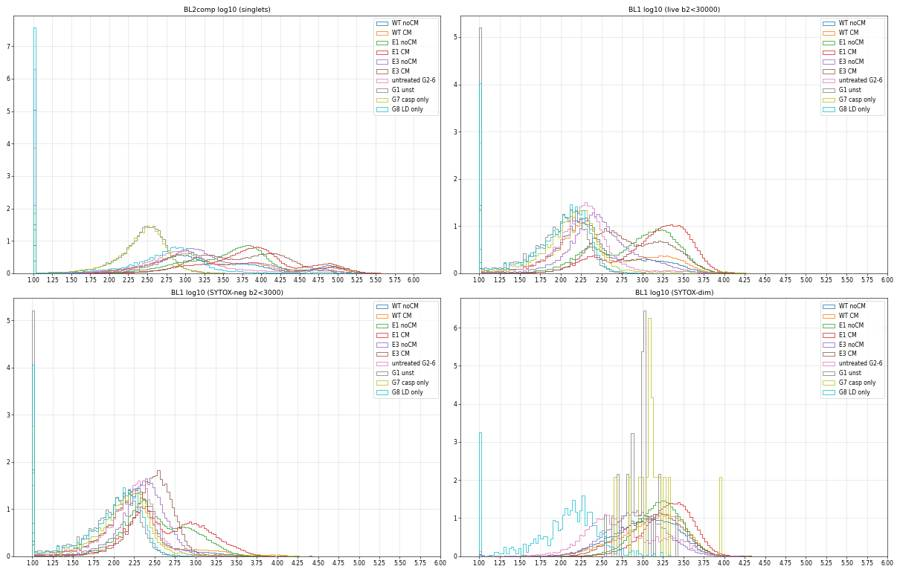
85
tool call · Bash
cd /task; cat > work/gate.py <<'EOF'
"""Build the single gating strategy, save GatingML, and compute counts.csv from the *reloaded* saved gates."""
import numpy as np, pandas as pd, flowkit as fk, os
IN='/task/inputs/raw/'; OUT='/task/outputs/'
lay=pd.read_csv('/task/inputs/plate_layout.csv')
T_CASP=700.0 # BL1-A (CellEvent Caspase-3/7 Green) positivity threshold, raw units
T_DEAD=30000.0 # compensated BL2-A (SYTOX AADvanced) bright/dead threshold
T_DIM=3000.0 # compensated BL2-A upper limit of strictly SYTOX-negative cells
SPILL_B1_TO_B2=0.916 # from G7 (caspase stain only)
SPILL_B2_TO_B1=0.0002 # from G8 (L/D stain only)
gs=fk.GatingStrategy()
comp=fk.Matrix(np.array([[1.0,SPILL_B1_TO_B2],[SPILL_B2_TO_B1,1.0]]),detectors=['BL1-A','BL2-A'],fluorochromes=['CellEvent_Casp37_Green','SYTOX_AADvanced'])
gs.add_comp_matrix('spill_ctrl',comp)
lgl=fk.transforms.LogicleTransform(param_t=1048576,param_w=0.75,param_m=4.5,param_a=0)
gs.add_transform('logicle',lgl)
tx=lambda v: float(lgl.apply(np.array([v],dtype=float))[0])
fsc_a=fk.Dimension('FSC-A',compensation_ref='uncompensated')
ssc_a=fk.Dimension('SSC-A',compensation_ref='uncompensated')
fsc_h=fk.Dimension('FSC-H',compensation_ref='uncompensated')
cells_v=[(120e3,50e3),(120e3,450e3),(450e3,1.04e6),(1.04e6,1.04e6),(1.04e6,50e3)]
sing_v=[(100e3,35e3),(300e3,115e3),(500e3,195e3),(700e3,258e3),(1.04e6,345e3),(1.05e6,600e3),(700e3,440e3),(400e3,290e3),(200e3,175e3),(90e3,110e3)]
gs.add_gate(fk.gates.PolygonGate('cells',[fsc_a,ssc_a],cells_v),('root',))
gs.add_gate(fk.gates.PolygonGate('singlets',[fsc_a,fsc_h],sing_v),('root','cells'))
def bl(ch,lo=None,hi=None):
return fk.Dimension(ch,compensation_ref='spill_ctrl',transformation_ref='logicle',range_min=None if lo is None else tx(lo),range_max=None if hi is None else tx(hi))
P=('root','cells','singlets')
gs.add_gate(fk.gates.RectangleGate('live',[bl('BL2-A',hi=T_DEAD)]),P)
gs.add_gate(fk.gates.RectangleGate('caspase_pos',[bl('BL1-A',lo=T_CASP)]),P+('live',))
gs.add_gate(fk.gates.RectangleGate('dead',[bl('BL2-A',lo=T_DEAD)]),P)
gs.add_gate(fk.gates.RectangleGate('caspase_pos_total',[bl('BL1-A',lo=T_CASP)]),P)
gs.add_gate(fk.gates.RectangleGate('sytox_neg',[bl('BL2-A',hi=T_DIM)]),P)
gs.add_gate(fk.gates.RectangleGate('caspase_pos_sytox_neg',[bl('BL1-A',lo=T_CASP)]),P+('sytox_neg',))
os.makedirs(OUT,exist_ok=True)
with open(OUT+'gates.xml','wb') as f: fk.export_gatingml(gs,f)
gs2=fk.parse_gating_xml(OUT+'gates.xml')
print(gs2.get_gate_ids())
pops=[('cells','cells','all_events'),('singlets','singlets','cells'),('live','live','singlets'),('caspase_pos','marker_positive','live'),
('dead','other','singlets'),('caspase_pos_total','other','singlets'),('sytox_neg','other','singlets'),('caspase_pos_sytox_neg','other','sytox_neg')]
rows=[]
for _,r in lay.iterrows():
s=fk.Sample(IN+r.file,sample_id=r.file)
res=gs2.gate_sample(s)
res0=gs.gate_sample(s)
cnt={'all_events':s.event_count}
for p,_,_ in pops:
cnt[p]=int(res.get_gate_count(p))
assert cnt[p]==int(res0.get_gate_count(p)),(r.well,p)
rows.append(dict(file=r.file,well=r.well,population='all_events',role='other',parent='none',count=cnt['all_events'],pct_of_parent=''))
for p,role,par in pops:
rows.append(dict(file=r.file,well=r.well,population=p,role=role,parent=par,count=cnt[p],pct_of_parent=(100*cnt[p]/cnt[par] if cnt[par]>0 else '')))
df=pd.DataFrame(rows,columns=['file','well','population','role','parent','count','pct_of_parent'])
df.to_csv(OUT+'counts.csv',index=False)
print(df.head(12).to_string()); print(len(df))
EOF
python3 -I work/gate.py 2>&1 | tail -3086
tool output
[('cells', ('root',)), ('singlets', ('root', 'cells')), ('live', ('root', 'cells', 'singlets')), ('caspase_pos', ('root', 'cells', 'singlets', 'live')), ('dead', ('root', 'cells', 'singlets')), ('caspase_pos_total', ('root', 'cells', 'singlets')), ('sytox_neg', ('root', 'cells', 'singlets')), ('caspase_pos_sytox_neg', ('root', 'cells', 'singlets', 'sytox_neg'))]
file well population role parent count pct_of_parent
0 Caspase-assay-2-mlk_caspase_Group_A1.fcs A1 all_events other none 31328
1 Caspase-assay-2-mlk_caspase_Group_A1.fcs A1 cells cells all_events 19719 62.943693
2 Caspase-assay-2-mlk_caspase_Group_A1.fcs A1 singlets singlets cells 18531 93.975354
3 Caspase-assay-2-mlk_caspase_Group_A1.fcs A1 live live singlets 16598 89.568831
4 Caspase-assay-2-mlk_caspase_Group_A1.fcs A1 caspase_pos marker_positive live 3204 19.303531
5 Caspase-assay-2-mlk_caspase_Group_A1.fcs A1 dead other singlets 1933 10.431169
6 Caspase-assay-2-mlk_caspase_Group_A1.fcs A1 caspase_pos_total other singlets 4992 26.938643
7 Caspase-assay-2-mlk_caspase_Group_A1.fcs A1 sytox_neg other singlets 13429 72.467757
8 Caspase-assay-2-mlk_caspase_Group_A1.fcs A1 caspase_pos_sytox_neg other sytox_neg 1454 10.827314
9 Caspase-assay-2-mlk_caspase_Group_A2.fcs A2 all_events other none 40169
10 Caspase-assay-2-mlk_caspase_Group_A2.fcs A2 cells cells all_events 27960 69.605915
11 Caspase-assay-2-mlk_caspase_Group_A2.fcs A2 singlets singlets cells 26008 93.018598
72088
tool call · Bash
cd /task; cat > work/gateplot.py <<'EOF'
import sys; sys.path.insert(0,'/task/work')
from load import *
from matplotlib.path import Path
import matplotlib; matplotlib.use('Agg'); import matplotlib.pyplot as plt
cells_v=[(120e3,50e3),(120e3,450e3),(450e3,1.04e6),(1.04e6,1.04e6),(1.04e6,50e3)]
sing_v=[(100e3,35e3),(300e3,115e3),(500e3,195e3),(700e3,258e3),(1.04e6,345e3),(1.05e6,600e3),(700e3,440e3),(400e3,290e3),(200e3,175e3),(90e3,110e3)]
ws=['G1','G7','G8','G2','A12','B12','C12','E4','C4','F8']
fig,axs=plt.subplots(3,len(ws),figsize=(5*len(ws),15))
a=lambda v: np.arcsinh(np.asarray(v)/150)
for j,w in enumerate(ws):
d=load(w)
axs[0,j].hist2d(d['FSC-A'],d['SSC-A'],bins=200,norm=matplotlib.colors.LogNorm(),range=[[0,1.05e6],[0,1.05e6]])
axs[0,j].plot(*zip(*(cells_v+cells_v[:1])),'r-'); axs[0,j].set_title(w)
c=d[Path(cells_v).contains_points(d[['FSC-A','SSC-A']].values)]
axs[1,j].hist2d(c['FSC-A'],c['FSC-H'],bins=200,norm=matplotlib.colors.LogNorm(),range=[[0,1.05e6],[0,6.5e5]])
axs[1,j].plot(*zip(*(sing_v+sing_v[:1])),'r-')
s=c[Path(sing_v).contains_points(c[['FSC-A','FSC-H']].values)]
axs[2,j].hist2d(a(s['BL1-A']),a(s['BL2-A']-0.916*s['BL1-A']),bins=150,norm=matplotlib.colors.LogNorm(),range=[[-1,9],[-2,9]])
axs[2,j].axhline(a(30000),color='r'); axs[2,j].axhline(a(3000),color='r',ls=':'); axs[2,j].axvline(a(700),color='r')
plt.tight_layout(); plt.savefig('work/p_gates.png',dpi=42)
EOF
python3 -I work/gateplot.py; head -c 3000 outputs/gates.xml89
tool call · Read
{
"file_path": "/task/work/p_gates.png"
}90
tool output
<?xml version='1.0' encoding='UTF-8'?>
<gating:Gating-ML xmlns:gating="http://www.isac-net.org/std/Gating-ML/v2.0/gating" xmlns:data-type="http://www.isac-net.org/std/Gating-ML/v2.0/datatypes" xmlns:transforms="http://www.isac-net.org/std/Gating-ML/v2.0/transformations">
<transforms:transformation transforms:id="logicle">
<transforms:logicle transforms:T="1048576" transforms:W="0.75" transforms:M="4.5" transforms:A="0"/>
</transforms:transformation>
<transforms:spectrumMatrix transforms:id="spill_ctrl">
<transforms:fluorochromes>
<data-type:fcs-dimension data-type:name="CellEvent_Casp37_Green"/>
<data-type:fcs-dimension data-type:name="SYTOX_AADvanced"/>
</transforms:fluorochromes>
<transforms:detectors>
<data-type:fcs-dimension data-type:name="BL1-A"/>
<data-type:fcs-dimension data-type:name="BL2-A"/>
</transforms:detectors>
<transforms:spectrum>
<transforms:coefficient transforms:value="1.0"/>
<transforms:coefficient transforms:value="0.916"/>
</transforms:spectrum>
<transforms:spectrum>
<transforms:coefficient transforms:value="0.0002"/>
<transforms:coefficient transforms:value="1.0"/>
</transforms:spectrum>
</transforms:spectrumMatrix>
<gating:PolygonGate gating:id="cells">
<gating:dimension gating:compensation-ref="uncompensated">
<data-type:fcs-dimension data-type:name="FSC-A"/>
</gating:dimension>
<gating:dimension gating:compensation-ref="uncompensated">
<data-type:fcs-dimension data-type:name="SSC-A"/>
</gating:dimension>
<gating:vertex>
<gating:coordinate data-type:value="120000.0"/>
<gating:coordinate data-type:value="50000.0"/>
</gating:vertex>
<gating:vertex>
<gating:coordinate data-type:value="120000.0"/>
<gating:coordinate data-type:value="450000.0"/>
</gating:vertex>
<gating:vertex>
<gating:coordinate data-type:value="450000.0"/>
<gating:coordinate data-type:value="1040000.0"/>
</gating:vertex>
<gating:vertex>
<gating:coordinate data-type:value="1040000.0"/>
<gating:coordinate data-type:value="1040000.0"/>
</gating:vertex>
<gating:vertex>
<gating:coordinate data-type:value="1040000.0"/>
<gating:coordinate data-type:value="50000.0"/>
</gating:vertex>
</gating:PolygonGate>
<gating:PolygonGate gating:id="singlets" gating:parent_id="cells">
<gating:dimension gating:compensation-ref="uncompensated">
<data-type:fcs-dimension data-type:name="FSC-A"/>
</gating:dimension>
<gating:dimension gating:compensation-ref="uncompensated">
<data-type:fcs-dimension data-type:name="FSC-H"/>
</gating:dimension>
<gating:vertex>
<gating:coordinate data-type:value="100000.0"/>
<gating:coordinate data-type:value="35000.0"/>
</gating:vertex>
<gating:vertex>
<gating:coordinate data-type:value="300000.0"/>
<gating:coordinate data-type:value="115000.0"/>
</gating:vertex>91
tool output
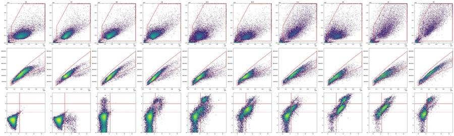
93
tool call · Bash
cd /task; cat > work/anal1.py <<'EOF'
import pandas as pd, numpy as np
from scipy import stats
c=pd.read_csv('/task/outputs/counts.csv'); lay=pd.read_csv('/task/inputs/plate_layout.csv')
p=c.pivot(index='well',columns='population',values='pct_of_parent'); n=c.pivot(index='well',columns='population',values='count')
w=lay.set_index('well').join(p[['cells','singlets','live','caspase_pos','dead','caspase_pos_total','sytox_neg','caspase_pos_sytox_neg']]).join(n[['all_events','singlets','live']].add_prefix('n_'))
w['cm']=w.conditioned_media.map({'WT 24hr conditioned media':'CM24','WT 48hr conditioned media':'CM48','no conditioned media':'noCM'})
w['cmany']=np.where(w.cm=='noCM','noCM','CM')
w['row']=w.index.str[0]; w['col']=w.index.str[1:].astype(int)
w.to_csv('work/perwell.csv')
pd.set_option('display.width',250); pd.set_option('display.max_rows',200)
m=w[w.row!='G']
print(m.pivot_table(index=['cell_line','row'],columns='col',values='caspase_pos').round(1).to_string())
print(m.pivot_table(index=['cell_line','row'],columns='col',values='dead').round(1).to_string())
print(m.pivot_table(index=['cell_line','row'],columns='col',values='caspase_pos_total').round(1).to_string())
print(m.pivot_table(index=['cell_line','row'],columns='col',values='caspase_pos_sytox_neg').round(1).to_string())
print(m.pivot_table(index=['cell_line','row'],columns='col',values='n_singlets').to_string())
# robust z within cell line x cmany
for (cl,cm),g in m.groupby(['cell_line','cmany']):
med=g.caspase_pos.median(); mad=stats.median_abs_deviation(g.caspase_pos,scale='normal')
z=(g.caspase_pos-med)/mad
print(cl,cm,'n',len(g),'median %.1f MAD-sd %.1f'%(med,mad),'outliers:',{k:(round(g.caspase_pos[k],1),round(v,1)) for k,v in z.items() if abs(v)>3.5})
print(w[w.row=='G'][['sample','cells','singlets','live','caspase_pos','dead','caspase_pos_total','caspase_pos_sytox_neg','n_singlets']].round(1).to_string())
EOF
python3 -I work/anal1.py94
tool output
col 1 2 3 4 5 6 7 8 9 10 11 12
cell_line row
E1 B 68.4 70.2 75.7 68.6 69.8 71.2 74.1 74.3 53.7 54.7 63.4 58.2
E 72.2 77.5 78.5 80.3 74.4 76.1 77.8 78.0 62.3 59.5 68.8 52.9
E3 C 54.8 57.5 47.6 56.3 49.0 52.9 45.1 46.7 21.4 14.9 13.4 21.5
F 43.9 54.9 44.4 54.7 45.6 50.5 44.6 8.3 31.3 21.7 13.9 14.2
WT A 19.3 22.7 23.0 29.3 23.8 22.6 21.6 23.6 19.9 18.5 20.0 20.5
D 34.6 26.9 29.9 36.4 26.3 25.4 23.9 32.1 27.4 21.0 21.1 8.8
col 1 2 3 4 5 6 7 8 9 10 11 12
cell_line row
E1 B 27.7 13.3 15.1 22.5 21.7 14.5 17.3 13.9 5.8 3.3 5.6 6.4
E 17.6 13.9 16.1 29.5 29.5 18.6 12.5 20.2 9.9 6.9 5.3 10.1
E3 C 12.9 11.5 10.0 12.6 11.1 8.8 6.1 10.3 5.1 3.4 2.8 3.2
F 19.0 19.5 18.9 27.2 18.4 20.2 22.1 15.2 12.4 10.2 12.0 8.5
WT A 10.4 7.9 8.7 11.3 9.4 8.2 9.2 11.4 9.8 11.5 12.2 13.0
D 9.3 7.4 8.6 14.1 11.1 7.9 10.4 17.5 11.3 11.5 12.1 9.5
col 1 2 3 4 5 6 7 8 9 10 11 12
cell_line row
E1 B 77.1 74.1 79.3 75.6 76.4 75.3 78.5 77.9 56.4 56.2 65.4 60.9
E 77.1 80.6 81.9 86.1 82.0 80.5 80.5 82.4 66.1 62.3 70.4 57.6
E3 C 60.6 62.3 52.8 61.8 54.7 57.1 48.4 52.2 25.3 17.7 15.5 23.9
F 54.4 63.6 54.8 67.0 55.6 60.5 56.8 21.6 39.7 29.6 24.0 21.3
WT A 26.9 28.1 28.6 37.0 30.5 28.5 28.3 32.0 27.5 27.4 29.3 30.7
D 40.7 32.3 35.9 45.3 34.4 31.2 31.6 44.0 35.6 30.0 30.6 17.1
col 1 2 3 4 5 6 7 8 9 10 11 12
cell_line row
E1 B 47.5 39.2 45.6 42.7 43.0 38.3 39.0 41.2 24.6 24.2 33.1 23.5
E 27.8 26.1 21.3 37.1 27.8 23.8 21.3 37.6 18.6 15.1 26.3 15.7
E3 C 6.8 12.1 3.2 9.3 6.4 4.6 3.5 4.9 3.1 2.6 1.9 2.7
F 3.8 7.2 4.4 6.3 3.6 4.2 4.2 2.3 3.9 2.6 1.6 1.5
WT A 10.8 13.0 13.7 16.5 12.4 10.1 8.7 9.6 9.4 7.8 8.1 8.2
D 7.3 3.6 4.5 5.6 4.4 3.1 3.0 4.5 4.1 2.6 3.2 1.4
col 1 2 3 4 5 6 7 8 9 10 11 12
cell_line row
E1 B 12727.0 21131.0 24781.0 11861.0 12761.0 20786.0 22336.0 15042.0 19797.0 23003.0 21907.0 14126.0
E 11915.0 22202.0 23724.0 11686.0 11888.0 20374.0 22557.0 8927.0 15165.0 22746.0 21706.0 12021.0
E3 C 8961.0 10956.0 11080.0 7951.0 7865.0 9414.0 10490.0 8105.0 12286.0 9422.0 12292.0 12346.0
F 5704.0 7492.0 9041.0 5058.0 5813.0 6039.0 8586.0 8457.0 6276.0 7503.0 10969.0 9294.0
WT A 18531.0 26008.0 28769.0 21363.0 22582.0 22964.0 25337.0 15595.0 21988.0 26286.0 26198.0 17101.0
D 18382.0 26696.0 27448.0 16043.0 17484.0 20282.0 24397.0 15554.0 18783.0 23868.0 26441.0 21541.0
E1 CM n 16 median 74.4 MAD-sd 4.9 outliers: {}
E1 noCM n 8 median 58.8 MAD-sd 6.4 outliers: {}
E3 CM n 16 median 48.3 MAD-sd 6.2 outliers: {'F8': (8.3, -6.4)}
E3 noCM n 8 median 18.2 MAD-sd 5.6 outliers: {}
WT CM n 16 median 24.7 MAD-sd 3.1 outliers: {'D4': (36.4, 3.7)}
WT noCM n 8 median 20.2 MAD-sd 1.2 outliers: {'D9': (27.4, 6.1), 'D12': (8.8, -9.8)}
sample cells singlets live caspase_pos dead caspase_pos_total caspase_pos_sytox_neg n_singlets
well
G1 WT no treatment (no stain) 92.8 97.6 100.0 0.1 0.0 0.1 0.1 23723
G2 WT no treatment 90.5 96.3 94.9 3.3 5.1 7.0 0.8 21490
G3 E3 no treatment 87.1 96.3 93.8 5.2 6.2 10.4 0.8 30069
G4 E3 no treatment 86.6 96.4 93.8 5.5 6.2 10.9 0.8 28571
G5 E1 no treatment 75.6 96.5 97.3 5.9 2.7 8.2 2.5 11648
G6 E1 no treatment 76.4 97.2 95.0 5.2 5.0 9.5 1.9 12450
G7 WT (caspase stain only) 92.9 96.6 100.0 4.5 0.0 4.5 4.4 21550
G8 WT (L/D stain only) 94.1 96.9 97.8 0.2 2.2 0.2 0.1 2217396
agent
Gates and counts are saved and verified against the reloaded `gates.xml`. Now moving to the condition summary, statistics and the figure.
97
tool call · Skill
{
"skill": "dataviz"
}98
tool output
Launching skill: dataviz
100
tool call · Bash
cd /tmp/claude-0/bundled-skills/2.1.322/aa3c02e9d47e484843599fffce60fab0/dataviz; sed -n 1,80p references/palette.md; grep -n -i "static\|png\|matplotlib\|dot plot\|strip" references/choosing-a-form.md references/marks-and-anatomy.md | head -30
101
tool output
# Reference palette
This is the **reference instance** of the data-viz method: every parameter the
method needs, filled in with a validated default palette. The rest of the skill
is system-agnostic - **to target your brand, substitute this file's values** and
re-run the validator. Nothing else changes.
## How to use these values
Everything below is plain hex. In an HTML chart, **define the slots you use as
CSS custom properties in a local `<style>` block** at the top of the file, then
reference them by role throughout - so the light/dark values swap in one place,
and the chart body is written against roles rather than raw hex:
```css
.viz-root {
color-scheme: light;
--surface-1: #fcfcfb; /* chart surface */
--text-primary: #0b0b0b;
--text-secondary: #52514e;
--series-1: #2a78d6; /* categorical slot 1 */
/* ...only the roles this chart uses */
}
@media (prefers-color-scheme: dark) {
:root:where(:not([data-theme="light"])) .viz-root {
color-scheme: dark;
--surface-1: #1a1a19;
--text-primary: #f0efec;
--text-secondary: #c3c2b7;
--series-1: #3987e5;
}
}
:root[data-theme="dark"] .viz-root {
color-scheme: dark;
--surface-1: #1a1a19;
--text-primary: #f0efec;
--text-secondary: #c3c2b7;
--series-1: #3987e5;
}
```
Declare the dark values under both scopes as above - the media query covers
the OS setting; the `data-theme` scope covers the viewer's theme toggle,
which must win both ways (the `:not(...)` guard lets a light stamp beat
OS-dark; `:where()` keeps the media block below the toggle scope).
## Categorical palette
Both modes are selected. The dark column is the same eight hues stepped for the
dark surface, not a separate palette:
| Slot | Hue | Light | Dark |
|------|-----|-------|------|
| 1 | blue | `#2a78d6` | `#3987e5` |
| 2 | orange | `#eb6834` | `#d95926` |
| 3 | aqua | `#1baf7a` | `#199e70` |
| 4 | yellow | `#eda100` | `#c98500` |
| 5 | magenta | `#e87ba4` | `#d55181` |
| 6 | green | `#008300` | `#008300` |
| 7 | violet | `#6250d6` | `#9085e9` |
| 8 | red | `#e34948` | `#e66767` |
This order passes every hard gate in both modes on the default *adjacent*
pairlist (stacks, bars, lines): worst adjacent CVD Delta E 9.1 light / 8.4 dark
(OKLab ×100, >=8 target), worst adjacent normal-vision Delta E 19.6 light / 19.3
dark (>=15 floor). Under `--pairs all` (scatter, bubble, choropleth, small
multiples) the full eight cannot clear the floors - with all 28 pairs in
play no ordering can (the pairlist no longer depends on order), and
re-stepping is off the table by the documented-palette rule - so those
chart forms carry a series cap: **the first three slots validate all-pairs
in both modes** (worst pair CVD Delta E 9.2 light / 9.4 dark, normal-vision 24.0
light / 20.9 dark - clear of the CVD warn band). Past three, fold to "Other" or
facet: the fourth slot puts yellow and orange on screen
together, and that pair fails the all-pairs floors (normal-vision 13.7
light; CVD 4.8 dark). Three light-mode slots (magenta, yellow, aqua)
sit below 3:1 contrast on the light surface: the **relief rule** applies (ship
visible direct labels or the table view). The dark steps were chosen for the
dark band (OKLCH L ~ 0.48-0.67, >= 3:1 on the dark surface) and validated as a
set. (Ordering history: adopted July 2026 for its more harmonious opening -
the same eight hues and steps as its predecessor, re-ordered, zero hex
Shell cwd was reset to /task103
tool call · Bash
cd /tmp/claude-0/bundled-skills/2.1.322/aa3c02e9d47e484843599fffce60fab0/dataviz; node scripts/validate_palette.js "#2a78d6,#eb6834,#1baf7a" --mode light --pairs all 2>&1 | tail -20; grep -n -i "surface\|text-\|grid\|muted" references/palette.md | sed -n 1,40p
104
tool output
/bin/bash: line 1: node: command not found 18: --surface-1: #fcfcfb; /* chart surface */ 19: --text-primary: #0b0b0b; 20: --text-secondary: #52514e; 27: --surface-1: #1a1a19; 28: --text-primary: #f0efec; 29: --text-secondary: #c3c2b7; 35: --surface-1: #1a1a19; 36: --text-primary: #f0efec; 37: --text-secondary: #c3c2b7; 50:dark surface, not a separate palette: 76:sit below 3:1 contrast on the light surface: the **relief rule** applies (ship 78:dark band (OKLCH L ~ 0.48-0.67, >= 3:1 on the dark surface) and validated as a 115:to recede toward the surface. For an **ordinal** ramp (discrete ordered marks - 116:funnel stages, tiers - validated with `--ordinal`), the step nearest the surface 128:| role | hex | light-surface contrast | dark-surface contrast | 135:Dark: same four steps - all clear 3:1 on the dark surface (`#1a1a19`) and remain 136:distinct from the dark categorical slots. On the light surface, warning and 158:## Surfaces (for the validator) 160:- Light chart surface: `#fcfcfb` 161:- Dark chart surface: `#1a1a19` 164:palette, re-run against your own surfaces:** 165:`--surface <your-light> --mode light` and `--surface <your-dark> --mode dark` - 166:contrast and band results are only meaningful against the surface the chart 173:| Chart surface | `#fcfcfb` | `#1a1a19` | 177:| Muted (axis/labels) | `#898781` | `#898781` | 179:| Gridline (hairline) | `#e1e0d9` | `#2c2c2a` | Shell cwd was reset to /task
106
tool call · Bash
cd /task; cat > work/anal2.py <<'EOF'
import pandas as pd, numpy as np, json
from scipy import stats
w=pd.read_csv('work/perwell.csv',index_col=0)
EXCL=['F8']
METRIC=("caspase_pos % of live = 100 x count(caspase_pos) / count(live); caspase_pos = live singlets with BL1-A (CellEvent Caspase-3/7 Green) >= 700; "
"live = singlets with compensated BL2-A (SYTOX AADvanced) < 30000 (dead-cell-stain-bright events removed); units: percent of live singlet cells")
dose_order=['DMSO','2uM','5uM','10uM']
rows=[]
def add(name,wells):
wells=[x for x in wells if x not in EXCL]
v=w.loc[wells,'caspase_pos']
rows.append(dict(condition=name,wells=';'.join(wells),n_wells_used=len(wells),mean=round(v.mean(),2),sd=(round(v.std(ddof=1),2) if len(wells)>1 else ''),metric_definition=METRIC,normalisation_applied='none'))
m=w[w.row!='G']
# pooled across camptothecin doses (no dose effect) -- primary comparisons
for cl in ['WT','E1','E3']:
g=m[m.cell_line==cl]
add(f'{cl}_noCM_all_doses',list(g[g.cm=='noCM'].index))
add(f'{cl}_anyCM_all_doses',list(g[g.cm!='noCM'].index))
add(f'{cl}_CM24_all_doses',list(g[g.cm=='CM24'].index))
add(f'{cl}_CM48_all_doses',list(g[g.cm=='CM48'].index))
# pooled across lines/CM by dose is not meaningful; give each design cell (n=2)
for cl in ['WT','E1','E3']:
for cm in ['noCM','CM24','CM48']:
for d in dose_order:
g=m[(m.cell_line==cl)&(m.cm==cm)&(m.camptothecin==d)]
add(f'{cl}_{cm}_{d}',list(g.index))
add('WT_untreated_stained',['G2'])
add('E1_untreated_stained_relabelled',['G3','G4'])
add('E3_untreated_stained_relabelled',['G5','G6'])
add('ctrl_WT_unstained',['G1'])
add('ctrl_WT_caspase_stain_only',['G7'])
add('ctrl_WT_dead_stain_only',['G8'])
cs=pd.DataFrame(rows,columns=['condition','wells','n_wells_used','mean','sd','metric_definition','normalisation_applied'])
cs.to_csv('/task/outputs/condition_summary.csv',index=False)
pd.set_option('display.width',250); pd.set_option('display.max_rows',200); pd.set_option('display.max_colwidth',60)
print(cs.drop(columns=['metric_definition','normalisation_applied']).to_string())
def cmp(a,b,col='caspase_pos',excl=EXCL):
A=w.loc[[x for x in a if x not in excl],col]; B=w.loc[[x for x in b if x not in excl],col]
t=stats.ttest_ind(B,A,equal_var=False); u=stats.mannwhitneyu(B,A,alternative='two-sided')
return dict(a_mean=A.mean(),b_mean=B.mean(),diff=B.mean()-A.mean(),a_rng=(A.min(),A.max()),b_rng=(B.min(),B.max()),welch_p=t.pvalue,mw_p=u.pvalue,nA=len(A),nB=len(B))
def wl(cl,cm):
g=m[m.cell_line==cl]
return list(g[g.cm.isin(cm)].index)
print('\n== primary comparisons (caspase_pos % of live) ==')
for col in ['caspase_pos','caspase_pos_total','caspase_pos_sytox_neg','dead']:
print('--',col)
for cl in ['WT','E1','E3']:
r=cmp(wl(cl,['noCM']),wl(cl,['CM24','CM48']),col)
print(cl,'noCM -> anyCM', {k:(np.round(v,3) if not isinstance(v,tuple) else tuple(np.round(v,1))) for k,v in r.items()})
r=cmp(wl(cl,['CM24']),wl(cl,['CM48']),col); print(cl,'CM24 -> CM48 diff %.1f p %.3f'%(r['diff'],r['welch_p']))
for cl in ['E1','E3']:
r=cmp(wl('WT',['noCM']),wl(cl,['noCM']),col); print('WT noCM ->',cl,'noCM diff %.1f (%.1f vs %.1f) welch p %.2g mw p %.2g'%(r['diff'],r['a_mean'],r['b_mean'],r['welch_p'],r['mw_p']))
r=cmp(wl('WT',['noCM']),wl(cl,['CM24','CM48']),col); print('WT noCM ->',cl,'anyCM diff %.1f'%r['diff'])
print('\n== sensitivity: include F8; exclude D12 ==')
for ex in ([],['F8'],['F8','D12']):
for cl in ['WT','E3']:
r=cmp(wl(cl,['noCM']),wl(cl,['CM24','CM48']),excl=ex); print(ex,cl,'noCM %.1f anyCM %.1f diff %.1f p %.2g'%(r['a_mean'],r['b_mean'],r['diff'],r['welch_p']))
# alternative layout (2022-11-30 map: rows A-C = 24hr, D-F = 48hr in cols 1-8)
print('\n== alt layout rows: CM in rows ABC vs DEF ==')
for cl,ra,rb in [('WT','A','D'),('E1','B','E'),('E3','C','F')]:
a=[f'{ra}{i}' for i in range(1,9)]; b=[f'{rb}{i}' for i in range(1,9)]
r=cmp(a,b); print(cl,'row',ra,'%.1f'%r['a_mean'],'row',rb,'%.1f'%r['b_mean'],'p %.3f'%r['welch_p'])
a=[f'{ra}{i}' for i in range(9,13)]; b=[f'{rb}{i}' for i in range(9,13)]
r=cmp(a,b); print(' noCM rows',ra,'%.1f'%r['a_mean'],rb,'%.1f'%r['b_mean'])
# camptothecin dose effect: paired within row x CM block
print('\n== camptothecin dose effect ==')
blocks=[]
for r_ in 'ABCDEF':
for c0 in (1,5,9):
ws=[f'{r_}{c0+i}' for i in range(4)] # 10,5,2,DMSO
v=w.loc[ws,'caspase_pos'].values
blocks.append(dict(row=r_,block=c0,c10=v[0],c5=v[1],c2=v[2],dmso=v[3],has_excl=any(x in EXCL for x in ws)))
b=pd.DataFrame(blocks); bb=b[~b.has_excl]
for k in ['c10','c5','c2']:
d=bb[k]-bb.dmso
print(k,'minus DMSO: mean %.2f sd %.2f, n=%d, paired t p=%.3f, wilcoxon p=%.3f, blocks with drug>DMSO: %d'%(d.mean(),d.std(),len(d),stats.ttest_rel(bb[k],bb.dmso).pvalue,stats.wilcoxon(bb[k],bb.dmso).pvalue,(d>0).sum()))
b2=b[(b.block==9)]; print(b2.round(1).to_string())
# dose means by line no CM
print(m[m.cm=='noCM'].groupby(['cell_line','camptothecin']).caspase_pos.agg(['mean','min','max']).round(1))
print(m.groupby(['camptothecin']).agg(n_singlets=('n_singlets','mean'),dead=('dead','mean'),casp=('caspase_pos','mean'),cells=('cells','mean')).round(1))
print(m.groupby(['cell_line','cmany']).agg(n_singlets=('n_singlets','mean'),dead=('dead','mean'),casp=('caspase_pos','mean'),cells=('cells','mean'),tot=('caspase_pos_total','mean'),cneg=('caspase_pos_sytox_neg','mean')).round(1))
print(w[w.row=='G'][['cells','dead','caspase_pos']].round(1).T.to_string())
EOF
python3 -I work/anal2.py107
tool output
condition wells n_wells_used mean sd 0 WT_noCM_all_doses A9;A10;A11;A12;D9;D10;D11;D12 8 19.65 5.13 1 WT_anyCM_all_doses A1;A2;A3;A4;A5;A6;A7;A8;D1;D2;D3;D4;D5;D6;D7;D8 16 26.36 4.87 2 WT_CM24_all_doses A1;A2;A3;A4;D1;D2;D3;D4 8 27.78 5.97 3 WT_CM48_all_doses A5;A6;A7;A8;D5;D6;D7;D8 8 24.94 3.26 4 E1_noCM_all_doses B9;B10;B11;B12;E9;E10;E11;E12 8 59.18 5.48 5 E1_anyCM_all_doses B1;B2;B3;B4;B5;B6;B7;B8;E1;E2;E3;E4;E5;E6;E7;E8 16 74.20 3.78 6 E1_CM24_all_doses B1;B2;B3;B4;E1;E2;E3;E4 8 73.92 4.69 7 E1_CM48_all_doses B5;B6;B7;B8;E5;E6;E7;E8 8 74.47 2.9 8 E3_noCM_all_doses C9;C10;C11;C12;F9;F10;F11;F12 8 19.04 6.19 9 E3_anyCM_all_doses C1;C2;C3;C4;C5;C6;C7;C8;F1;F2;F3;F4;F5;F6;F7 15 49.90 4.88 10 E3_CM24_all_doses C1;C2;C3;C4;F1;F2;F3;F4 8 51.76 5.53 11 E3_CM48_all_doses C5;C6;C7;C8;F5;F6;F7 7 47.77 3.14 12 WT_noCM_DMSO A12;D12 2 14.65 8.27 13 WT_noCM_2uM A11;D11 2 20.52 0.78 14 WT_noCM_5uM A10;D10 2 19.74 1.76 15 WT_noCM_10uM A9;D9 2 23.68 5.3 16 WT_CM24_DMSO A4;D4 2 32.87 5.01 17 WT_CM24_2uM A3;D3 2 26.48 4.89 18 WT_CM24_5uM A2;D2 2 24.79 2.96 19 WT_CM24_10uM A1;D1 2 26.96 10.83 20 WT_CM48_DMSO A8;D8 2 27.88 6.03 21 WT_CM48_2uM A7;D7 2 22.77 1.63 22 WT_CM48_5uM A6;D6 2 24.04 1.97 23 WT_CM48_10uM A5;D5 2 25.06 1.78 24 E1_noCM_DMSO B12;E12 2 55.51 3.76 25 E1_noCM_2uM B11;E11 2 66.08 3.78 26 E1_noCM_5uM B10;E10 2 57.11 3.37 27 E1_noCM_10uM B9;E9 2 58.04 6.08 28 E1_CM24_DMSO B4;E4 2 74.46 8.33 29 E1_CM24_2uM B3;E3 2 77.10 1.97 30 E1_CM24_5uM B2;E2 2 73.83 5.16 31 E1_CM24_10uM B1;E1 2 70.29 2.67 32 E1_CM48_DMSO B8;E8 2 76.18 2.61 33 E1_CM48_2uM B7;E7 2 75.94 2.57 34 E1_CM48_5uM B6;E6 2 73.65 3.51 35 E1_CM48_10uM B5;E5 2 72.13 3.23 36 E3_noCM_DMSO C12;F12 2 17.86 5.19 37 E3_noCM_2uM C11;F11 2 13.62 0.38 38 E3_noCM_5uM C10;F10 2 18.33 4.84 39 E3_noCM_10uM C9;F9 2 26.35 6.96 40 E3_CM24_DMSO C4;F4 2 55.51 1.08 41 E3_CM24_2uM C3;F3 2 46.03 2.27 42 E3_CM24_5uM C2;F2 2 56.20 1.81 43 E3_CM24_10uM C1;F1 2 49.32 7.73 44 E3_CM48_DMSO C8 1 46.66 45 E3_CM48_2uM C7;F7 2 44.83 0.35 46 E3_CM48_5uM C6;F6 2 51.73 1.72 47 E3_CM48_10uM C5;F5 2 47.32 2.43 48 WT_untreated_stained G2 1 3.33 49 E1_untreated_stained_relabelled G3;G4 2 5.35 0.24 50 E3_untreated_stained_relabelled G5;G6 2 5.55 0.42 51 ctrl_WT_unstained G1 1 0.15 52 ct … [6,298 more characters not shown]
109
tool call · Bash
cd /task; cat > work/fig.py <<'EOF'
import pandas as pd, numpy as np
import matplotlib; matplotlib.use('Agg'); import matplotlib.pyplot as plt
w=pd.read_csv('work/perwell.csv',index_col=0)
SURF='#fcfcfb'; INK='#0b0b0b'; INK2='#52514e'; MUTED='#898781'; GRID='#e1e0d9'
ser={'noCM':('No conditioned media','#2a78d6','o'),'CM24':('WT 24 hr conditioned media','#eb6834','s'),'CM48':('WT 48 hr conditioned media','#1baf7a','^')}
doses=['DMSO','2uM','5uM','10uM']; dl=['DMSO','2 µM','5 µM','10 µM']
panels=[('WT','H4 WT'),('E1','H4 PGRN-KO E1'),('E3','H4 PGRN-KO E3')]
untreated={'WT':['G2'],'E1':['G3','G4'],'E3':['G5','G6']}
wt_ref=w[(w.cell_line=='WT')&(w.cm=='noCM')&(w.row!='G')].caspase_pos.mean()
plt.rcParams.update({'font.family':'DejaVu Sans','font.size':11,'axes.edgecolor':MUTED,'text.color':INK,'axes.labelcolor':INK2,'xtick.color':INK2,'ytick.color':INK2})
fig,axs=plt.subplots(1,3,figsize=(15,6.6),sharey=True,facecolor=SURF)
off={'noCM':-0.2,'CM24':0.0,'CM48':0.2}
for ax,(cl,title) in zip(axs,panels):
ax.set_facecolor(SURF)
ax.axhline(wt_ref,color=INK2,lw=1.2,ls=(0,(5,3)),zorder=1)
u=w.loc[untreated[cl],'caspase_pos'].mean()
ax.axhline(u,color=MUTED,lw=1.2,ls=(0,(1,2)),zorder=1)
for cm,(lab,col,mk) in ser.items():
xs=[];ms=[]
for i,d in enumerate(doses):
g=w[(w.cell_line==cl)&(w.cm==cm)&(w.camptothecin==d)&(w.row!='G')]
keep=g[g.index!='F8']
ax.scatter([i+off[cm]]*len(keep),keep.caspase_pos,s=58,marker=mk,color=col,edgecolor=SURF,linewidth=1.2,zorder=3)
ex=g[g.index=='F8']
if len(ex):
ax.scatter([i+off[cm]],ex.caspase_pos,s=58,marker=mk,facecolor='none',edgecolor=col,linewidth=1.6,zorder=3)
ax.annotate('F8 excluded\n(outlier)',(i+off[cm],ex.caspase_pos.iloc[0]),xytext=(8,4),textcoords='offset points',fontsize=9,color=INK2,va='center')
xs.append(i+off[cm]); ms.append(keep.caspase_pos.mean())
ax.plot(xs,ms,color=col,lw=2,zorder=2,label=lab,marker=mk,markersize=0)
ax.set_title(title,fontsize=13,color=INK,loc='left',pad=8)
ax.set_xticks(range(4)); ax.set_xticklabels(dl); ax.set_xlim(-0.55,3.55); ax.set_ylim(0,100)
ax.set_xlabel('Camptothecin (vehicle = DMSO)')
ax.yaxis.grid(True,color=GRID,lw=0.8); ax.set_axisbelow(True)
for s in ['top','right']: ax.spines[s].set_visible(False)
ax.spines['left'].set_color(GRID); ax.spines['bottom'].set_color(MUTED); ax.tick_params(length=0)
axs[0].set_ylabel('Caspase-3/7-positive cells (% of live singlets)')
# reference-line labels in the WT panel, where there is room
axs[0].text(3.5,wt_ref+17.5,'WT level, no conditioned media\n(mean of 8 wells, %.0f%%)'%wt_ref,fontsize=9,color=INK2,ha='right',va='bottom')
axs[0].annotate('',xy=(2.9,wt_ref+0.6),xytext=(2.9,wt_ref+17),arrowprops=dict(arrowstyle='-',color=INK2,lw=0.8))
axs[0].text(-0.5,w.loc['G2','caspase_pos']-1.3,'untreated wells of the same line (row G)',fontsize=9,color=MUTED,ha='left',va='top')
h,l=axs[0].get_legend_handles_labels()
from matplotlib.lines import Line2D
hh=[Line2D([0],[0],color=ser[k][1],lw=2,marker=ser[k][2],markersize=8,markeredgecolor=SURF) for k in ser]
fig.legend(hh,[ser[k][0] for k in ser],loc='upper left',bbox_to_anchor=(0.045,0.895),ncol=3,frameon=False,fontsize=11,handlelength=2.2,columnspacing=2.2)
fig.suptitle('WT-conditioned media did not lower caspase-3/7 activity in PGRN-KO cells — it raised it',x=0.05,y=0.975,ha='left',fontsize=15,color=INK,fontweight='bold')
fig.text(0.05,0.022,'Points = single wells (2 per condition); lines join condition means. Camptothecin gave no dose-response over DMSO in any line. '
'Plate acquired 02-Dec-2022, Attune NxT; BL1 = CellEvent Caspase-3/7 Green, BL2 = SYTOX AADvanced.',fontsize=9,color=INK2,ha='left')
plt.subplots_adjust(left=0.05,right=0.985,top=0.80,bottom=0.14,wspace=0.06)
plt.savefig('/task/outputs/figure.png',dpi=160,facecolor=SURF)
EOF
python3 -I work/fig.py110
tool call · Read
{
"file_path": "/task/outputs/figure.png"
}111
tool output
(Bash completed with no output)
112
tool output
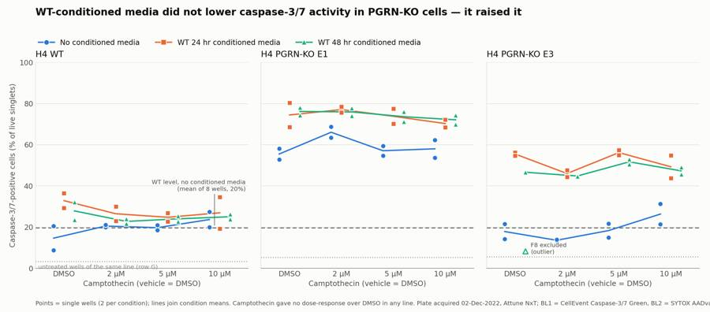
114
agent
Figure drafted; I'm fixing a couple of label overlaps, then writing the flags, report and answer files.
115
tool call · Bash
cd /task; python3 - <<'EOF'
import re
s=open('work/fig.py').read()
a=s.index("# reference-line labels"); b=s.index("h,l=axs[0]")
new='''# reference-line labels in the E1 panel, where there is empty space
axs[1].text(-0.5,wt_ref+1.5,'WT level without conditioned media (mean of 8 wells, %.0f%%)'%wt_ref,fontsize=9.5,color=INK2,ha='left',va='bottom')
axs[1].text(-0.5,w.loc[untreated['E1'],'caspase_pos'].mean()+1.5,'untreated wells of the same line (row G)',fontsize=9.5,color=MUTED,ha='left',va='bottom')
'''
s=s[:a]+new+s[b:]
s=s.replace("'Points = single wells (2 per condition); lines join condition means. Camptothecin gave no dose-response over DMSO in any line. '\n 'Plate acquired 02-Dec-2022, Attune NxT; BL1 = CellEvent Caspase-3/7 Green, BL2 = SYTOX AADvanced.'",
"'Points = single wells (2 per condition); lines join condition means. Camptothecin gave no dose-response over DMSO in any line.\\n'\n 'Plate acquired 02-Dec-2022, Attune NxT; BL1 = CellEvent Caspase-3/7 Green, BL2 = SYTOX AADvanced dead-cell stain.'")
s=s.replace("fig.text(0.05,0.022,","fig.text(0.05,0.018,").replace("bottom=0.14","bottom=0.17")
open('work/fig.py','w').write(s)
EOF
python3 -I work/fig.py116
tool call · Read
{
"file_path": "/task/outputs/figure.png"
}117
tool output
(Bash completed with no output)
118
tool output
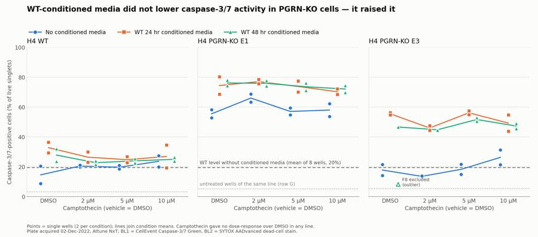
120
tool call · Bash
cd /task; cat > work/flags.py <<'EOF'
import sys; sys.path.insert(0,'/task/work')
from load import *
w=pd.read_csv('work/perwell.csv',index_col=0); fp=pd.read_csv('work/finger.csv',index_col=0)
rows=[]
sat={}
for well in lay.well:
d=load(well)
sat[well]=(100*((d['FSC-A']>=1048575)|(d['SSC-A']>=1048575)).mean(), 100*(d['FSC-A']>=1048575).mean(), 100*(d['SSC-A']>=1048575).mean())
print(pd.DataFrame(sat,index=['union','fsc','ssc']).T.groupby(lay.set_index('well').cell_line).agg(['min','max']).round(2))
e3ref=fp[(fp.cl=='E3')&(~fp.index.str.startswith('G'))].hi_ssc; e1ref=fp[(fp.cl=='E1')&(~fp.index.str.startswith('G'))].hi_ssc; wtref=fp[(fp.cl=='WT')&(~fp.index.str.startswith('G'))].hi_ssc
for _,r in lay.iterrows():
well=r.well; u,f,s=sat[well]; cp=w.loc[well,'caspase_pos']
satnote=f"{u:.1f}% of all events sit at the FSC-A/SSC-A ceiling of 1,048,575 (FSC-A {f:.1f}%, SSC-A {s:.1f}%) and fall outside the cells gate"
if well in ('G3','G4'):
it,dec='mislabel','keep_with_note'
ev=(f"Plate map says E3, but scatter matches E1/WT, not E3: {fp.loc[well,'hi_ssc']:.1f}% of healthy singlets have SSC-A > 400,000 "
f"(E3 wells in rows C/F: {e3ref.min():.1f}-{e3ref.max():.1f}%; E1 wells in rows B/E: {e1ref.min():.1f}-{e1ref.max():.1f}%; WT rows A/D: {wtref.min():.1f}-{wtref.max():.1f}%); median SSC-A {fp.loc[well,'ssc']:.0f}. "
f"Labels of G3/G4 and G5/G6 look swapped; treated as untreated E1 for reference only; not used in any comparison. Caspase-positive {cp:.1f}% of live.")
elif well in ('G5','G6'):
it,dec='mislabel','keep_with_note'
ev=(f"Plate map says E1, but scatter matches E3: {fp.loc[well,'hi_ssc']:.1f}% of healthy singlets have SSC-A > 400,000 "
f"(E3 wells: {e3ref.min():.1f}-{e3ref.max():.1f}%; E1 wells: {e1ref.min():.1f}-{e1ref.max():.1f}%); median SSC-A {fp.loc[well,'ssc']:.0f}. "
f"Labels of G3/G4 and G5/G6 look swapped; treated as untreated E3 for reference only; not used in any comparison. Also: {satnote}. Caspase-positive {cp:.1f}% of live.")
elif well=='F8':
oth=w[(w.cell_line=='E3')&(w.cm!='noCM')&(w.row!='G')&(w.index!='F8')].caspase_pos
it,dec='other','exclude'
ev=(f"Replicate-discordant outlier: caspase-positive {cp:.1f}% of live versus {oth.min():.1f}-{oth.max():.1f}% in the other 15 E3 conditioned-media wells (replicate C8 = {w.loc['C8','caspase_pos']:.1f}%); robust z = -6.4. "
f"Debris is also low ({100-w.loc[well,'cells']:.1f}% of events outside the cells gate versus {100-w.loc[['F1','F2','F3','F4','F5','F6','F7'],'cells'].max():.1f}-{100-w.loc[['F1','F2','F3','F4','F5','F6','F7'],'cells'].min():.1f}% in F1-F7), so the well looks as if it did not receive the same treatment. Cause unknown. Also: {satnote}.")
elif well=='D12':
oth=w[(w.cell_line=='WT')&(w.cm=='noCM')&(w.row!='G')&(w.index!='D12')].caspase_pos
it,dec='other','keep_with_note'
ev=(f"Replicate-discordant low value: caspase-positive {cp:.1f}% of live versus {oth.min():.1f}-{oth.max():.1f}% in the other 7 WT no-conditioned-media wells (replicate A12 = {w.loc['A12','caspase_pos']:.1f}%); "
f"events outside the cells gate {100-w.loc[well,'cells']:.1f}% versus {100-w.loc[['D9','D10','D11','A9','A10','A11','A12'],'cells'].max():.1f}-{100-w.loc[['D9','D10','D11','A9','A10','A11','A12'],'cells'].min():.1f}%. "
f"Only about 2-fold below its group, cause unknown, so kept; excluding it moves the WT no-conditioned-media mean from 19.6% to 21.2% and changes no conclusion.")
elif u>=3.0:
it,dec='saturation','keep_with_note'
ev=satnote+f". E3 cells are larger and more granular than WT/E1 (WT/E1 wells: 0.3-2.6%), so the largest E3 cells are lost at FSC 20 V / SSC 290 V. Fluorescence channels are not saturated (BL2-A at maximum in {100*(load(well)['BL2-A']>=1048575).mean():.2f}% of events)."
else:
it,dec,ev='none','keep',''
rows.append(dict(file=r.file,well=well,issue_type=it,evidence=ev,decision=dec))
fl=pd.DataFrame(rows,columns=['file','well','issue_type','evidence','decision'])
fl.to_csv('/task/outputs/flags.csv',index=False)
print(fl.issue_type.value_counts()); print(fl[fl.issue_type!='none'][['well','issue_type','decision']].to_string())
for x in ['G3','G5','F8','D12','C1']: print(fl.set_index('well').loc[x,'evidence'],'\n')
EOF
python3 -I work/flags.py121
tool output
union fsc ssc
min max min max min max
cell_line
E1 0.26 9.18 0.18 6.86 0.09 6.62
E3 1.20 9.45 1.14 5.31 0.54 8.88
WT 0.76 2.42 0.43 2.11 0.61 1.57
issue_type
none 51
saturation 23
mislabel 4
other 2
Name: count, dtype: int64
well issue_type decision
24 C1 saturation keep_with_note
25 C2 saturation keep_with_note
26 C3 saturation keep_with_note
27 C4 saturation keep_with_note
28 C5 saturation keep_with_note
29 C6 saturation keep_with_note
30 C7 saturation keep_with_note
31 C8 saturation keep_with_note
32 C9 saturation keep_with_note
33 C10 saturation keep_with_note
34 C11 saturation keep_with_note
35 C12 saturation keep_with_note
47 D12 other keep_with_note
60 F1 saturation keep_with_note
61 F2 saturation keep_with_note
62 F3 saturation keep_with_note
63 F4 saturation keep_with_note
64 F5 saturation keep_with_note
65 F6 saturation keep_with_note
66 F7 saturation keep_with_note
67 F8 other exclude
68 F9 saturation keep_with_note
69 F10 saturation keep_with_note
70 F11 saturation keep_with_note
71 F12 saturation keep_with_note
74 G3 mislabel keep_with_note
75 G4 mislabel keep_with_note
76 G5 mislabel keep_with_note
77 G6 mislabel keep_with_note
Plate map says E3, but scatter matches E1/WT, not E3: 1.0% of healthy singlets have SSC-A > 400,000 (E3 wells in rows C/F: 21.6-50.3%; E1 wells in rows B/E: 0.5-1.4%; WT rows A/D: 1.5-4.3%); median SSC-A 202412. Labels of G3/G4 and G5/G6 look swapped; treated as untreated E1 for reference only; not used in any comparison. Caspase-positive 5.2% of live.
Plate map says E1, but scatter matches E3: 23.9% of healthy singlets have SSC-A > 400,000 (E3 wells: 21.6-50.3%; E1 wells: 0.5-1.4%); median SSC-A 308876. Labels of G3/G4 and G5/G6 look swapped; treated as untreated E3 for reference only; not used in any comparison. Also: 7.5% of all events sit at the FSC-A/SSC-A ceiling of 1,048,575 (FSC-A 4.7%, SSC-A 6.1%) and fall outside the cells gate. Caspase-positive 5.9% of live.
Replicate-discordant outlier: caspase-positive 8.3% of live versus 43.9-57.5% in the other 15 E3 conditioned-media wells (replicate C8 = 46.7%); robust z = -6.4. Debris is also low (36.1% of events outside the cells gate versus 46.3-54.7% in F1-F7), so the well looks as if it did not receive the same treatment. Cause unknown. Also: 9.4% of all events sit at the FSC-A/SSC-A ceiling of 1,048,575 (FSC-A 3.9%, SSC-A 8.9%) and fall outside the cells gate.
Replicate-discordant low value: caspase-positive 8.8% of live versus 18.5-27.4% in the other 7 WT no-conditioned-media wells (replicate A12 = 20.5%); events outside the cells gate 21.4% versus 33.5-42.2%. Only about 2-fold below its group, cause unknown, so kept; excluding it moves the WT no-conditioned-media mean from 19.6% to 21.2% and changes no conclusion.
5.1% of all events sit at the FSC-A/SSC-A ceiling of 1,048,575 (FSC-A 3.0%, SSC-A 3.6%) and fall outside the cells gate. E3 cells are larger and more granular than WT/E1 (WT/E1 wells: 0.3-2.6%), so the largest E3 cells are lost at FSC 20 V / SSC 290 V. Fluorescence channels are not saturated (BL2-A at maximum in 0.01% of events).123
tool call · Bash
cd /task; python3 -I - <<'EOF'
import pandas as pd, numpy as np
w=pd.read_csv('work/perwell.csv',index_col=0)
fl=pd.read_csv('outputs/flags.csv',keep_default_na=False)
import re
u={}
for _,r in fl.iterrows():
m=re.search(r'([\d.]+)% of all events sit',r.evidence)
if m: u[r.well]=float(m.group(1))
# recompute union for all wells from qc file
q=pd.read_csv('work/qc.csv',index_col=0)
import sys; sys.path.insert(0,'/task/work')
from load import load
un={x:100*((load(x)['FSC-A']>=1048575)|(load(x)['SSC-A']>=1048575)).mean() for x in w.index}
un=pd.Series(un)
wt_e1=[x for x in w.index if x[0] in 'ABDE']
print('WT/E1 rows ABDE union range',un[wt_e1].min().round(2),un[wt_e1].max().round(2),' G1-4,7,8:',un[['G1','G2','G3','G4','G7','G8']].round(2).to_dict(), 'E3 rows CF',un[[x for x in w.index if x[0] in 'CF']].min().round(2),un[[x for x in w.index if x[0] in 'CF']].max().round(2))
lo,hi=un[wt_e1].min(),un[wt_e1].max()
fl['evidence']=fl.evidence.str.replace('(WT/E1 wells: 0.3-2.6%)',f'(WT and E1 wells in rows A, B, D, E: {lo:.1f}-{hi:.1f}%)',regex=False)
fl.to_csv('outputs/flags.csv',index=False)
print(fl.set_index('well').loc['C1','evidence'])
m=w[w.row!='G']
print('outside cells gate: rows A-F',(100-m.cells).min().round(1),(100-m.cells).max().round(1),(100-m.cells).mean().round(1),' row G',(100-w[w.row=="G"].cells).round(1).to_dict())
print('n live min',w.n_live.min(), w.n_live.idxmin(),'n singlets min',w.n_singlets.min(),'events',w.n_all_events.min(),w.n_all_events.max())
print('singlets pct range',w.singlets.min().round(1),w.singlets.max().round(1))
print(m.groupby(['cell_line','cmany']).caspase_pos.agg(['mean','std','min','max','count']).round(1))
print(m.groupby(['cell_line','camptothecin']).caspase_pos.mean().round(1).unstack())
print(m.groupby('camptothecin').n_singlets.mean().round(0))
EOF124
tool output
WT/E1 rows ABDE union range 0.26 2.08 G1-4,7,8: {'G1': 1.99, 'G2': 2.42, 'G3': 1.25, 'G4': 1.2, 'G7': 1.49, 'G8': 1.66} E3 rows CF 3.62 9.45
5.1% of all events sit at the FSC-A/SSC-A ceiling of 1,048,575 (FSC-A 3.0%, SSC-A 3.6%) and fall outside the cells gate. E3 cells are larger and more granular than WT/E1 (WT and E1 wells in rows A, B, D, E: 0.3-2.1%), so the largest E3 cells are lost at FSC 20 V / SSC 290 V. Fluorescence channels are not saturated (BL2-A at maximum in 0.01% of events).
outside cells gate: rows A-F 21.4 57.7 38.7 row G {'G1': 7.2, 'G2': 9.5, 'G3': 12.9, 'G4': 13.4, 'G5': 24.4, 'G6': 23.6, 'G7': 7.1, 'G8': 5.9}
n live min 3681 F4 n singlets min 5058 events 11614 47337
singlets pct range 85.3 97.6
mean std min max count
cell_line cmany
E1 CM 74.2 3.8 68.4 80.3 16
noCM 59.2 5.5 52.9 68.8 8
E3 CM 47.3 11.4 8.3 57.5 16
noCM 19.0 6.2 13.4 31.3 8
WT CM 26.4 4.9 19.3 36.4 16
noCM 19.6 5.1 8.8 27.4 8
camptothecin 10uM 2uM 5uM DMSO
cell_line
E1 66.8 73.0 68.2 68.7
E3 41.0 34.8 42.1 33.6
WT 25.2 23.3 22.9 25.1
camptothecin
10uM 13828.0
2uM 19892.0
5uM 18176.0
DMSO 12893.0
Name: n_singlets, dtype: float64126
tool call · Bash
cd /task; cat > work/answer.py <<'EOF'
import json, pandas as pd
cs=pd.read_csv('/task/outputs/condition_summary.csv').set_index('condition')
fl=pd.read_csv('/task/outputs/flags.csv',keep_default_na=False)
m=lambda c: cs.loc[c,'mean']
def comp(name,a,b,direction,extra,conf):
d=m(b)-m(a)
return dict(comparison=name,a=a,b=b,direction=direction,magnitude=f"{d:+.1f} percentage points of caspase-3/7-positive live singlets ({m(a):.1f}% -> {m(b):.1f}%){extra}",confidence=conf)
comps=[
comp("PGRN-KO E1: no conditioned media vs WT-conditioned media (24 hr and 48 hr pooled, all camptothecin doses pooled)","E1_noCM_all_doses","E1_anyCM_all_doses","increase","; n = 8 vs 16 wells; a rescue would have been a decrease","medium"),
comp("PGRN-KO E3: no conditioned media vs WT-conditioned media (24 hr and 48 hr pooled, all camptothecin doses pooled, F8 excluded)","E3_noCM_all_doses","E3_anyCM_all_doses","increase","; n = 8 vs 15 wells; +28.3 points if F8 is kept","high"),
comp("WT: no conditioned media vs WT-conditioned media (pooled)","WT_noCM_all_doses","WT_anyCM_all_doses","increase","; n = 8 vs 16 wells; small and mostly from plate row D","low"),
comp("KO phenotype without conditioned media: WT vs E1","WT_noCM_all_doses","E1_noCM_all_doses","increase","; n = 8 vs 8 wells","high"),
comp("KO phenotype without conditioned media: WT vs E3","WT_noCM_all_doses","E3_noCM_all_doses","no_clear_change","; n = 8 vs 8 wells; E3 does not show the KO phenotype on this plate","medium"),
comp("Distance from the WT target after treatment: WT without conditioned media vs E1 with conditioned media","WT_noCM_all_doses","E1_anyCM_all_doses","increase","; the gap to WT widened from 39.5 to 54.5 points","high"),
comp("Distance from the WT target after treatment: WT without conditioned media vs E3 with conditioned media","WT_noCM_all_doses","E3_anyCM_all_doses","increase","; E3 started at the WT level and moved 30 points away from it","high"),
comp("24 hr vs 48 hr conditioned media in E1","E1_CM24_all_doses","E1_CM48_all_doses","no_clear_change","; n = 8 vs 8 wells","medium"),
comp("24 hr vs 48 hr conditioned media in E3","E3_CM24_all_doses","E3_CM48_all_doses","no_clear_change","; n = 8 vs 7 wells","medium"),
comp("Camptothecin challenge in WT without conditioned media: DMSO vs 10 uM","WT_noCM_DMSO","WT_noCM_10uM","no_clear_change","; n = 2 vs 2 wells with overlapping ranges (DMSO 8.8 and 20.5%; 10 uM 19.9 and 27.4%); across 17 row-by-media blocks 10 uM minus DMSO averaged -0.2 points","medium"),
comp("Camptothecin challenge in E1 without conditioned media: DMSO vs 10 uM","E1_noCM_DMSO","E1_noCM_10uM","no_clear_change","; n = 2 vs 2 wells with overlapping ranges","medium"),
]
ans=dict(
question="Can WT progranulin-conditioned media bring caspase-3/7 activity in H4 PGRN-KO lines (E1, E3) back toward WT levels?",
comparisons=comps,
overall_answer=("no: WT-conditioned media did not move either KO line toward the WT level; the caspase-3/7-positive fraction of live singlets went up, not down "
f"(E1 {m('E1_noCM_all_doses'):.1f}% -> {m('E1_anyCM_all_doses'):.1f}%, E3 {m('E3_noCM_all_doses'):.1f}% -> {m('E3_anyCM_all_doses'):.1f}%, against a WT level of {m('WT_noCM_all_doses'):.1f}%), with 24 hr and 48 hr media behaving alike. "
"This plate cannot say whether progranulin itself is ineffective, because the conditioned media had no matched control, its progranulin content was not measured, and the camptothecin challenge did not work."),
assay_verdict="needs_optimisation",
next_action="change_treatment_or_timing",
next_change=dict(
what="Conditioned-media treatment: the progranulin source and its matched control arm",
**{"from":"Neat WT-conditioned media (from 10,000 cells per well, harvested after 24 or 48 hr, stored at 4 C for 2-3 days, progranulin not measured) left on the cells for about 29 hr and compared only against wells with no conditioned media"},
to="A defined progranulin dose in fresh complete media (recombinant human progranulin titration, or WT-conditioned media with progranulin confirmed by ELISA and diluted 1:1 in fresh media), run next to progranulin-free control media made and handled identically (media conditioned by the KO lines)",
why="Conditioned media raised caspase-3/7-positive cells in all three lines (by 15 points in E1, 31 in E3, 7 in WT), which points to a stress from spent or stored media that is confounded with any progranulin effect; without a progranulin-free matched control and a known progranulin dose, neither a rescue nor a true negative can be read from this design."),
excluded_wells=sorted(fl[fl.decision=='exclude'].well.tolist()),
caveats=[
"Single plate, two wells per condition, one experiment day; the pooled comparisons treat wells across camptothecin doses as replicates, which is justified only because camptothecin had no effect.",
"Camptothecin gave no dose-response over DMSO in any line (10 uM minus DMSO = -0.2 points averaged over 17 row-by-media blocks), so the challenge arm of the assay is not validated; exposure was at most about 4.5 hr before acquisition.",
"DMSO-only wells without conditioned media were far above the untreated wells of row G (WT 14.7% vs 3.3%; E1 55.5% vs 5.4%; E3 17.9% vs 5.6%), so something in the handling of rows A-F (vehicle, wash or media change) induces caspase activity on its own.",
"No matched control for conditioned media (no KO-conditioned or mock-conditioned media) and no measurement of progranulin in the media.",
"E3 did not show the KO phenotype without conditioned media (19.0% vs 19.6% in WT), so only E1 offered a phenotype to rescue.",
"Plate maps disagree on which wells got 24 hr versus 48 hr media (by row block on 30-Nov, by column block on 02-Dec), and the 28-Nov source plate marks E1 and E3 wells as 48 hr harvest, so the '48 hr' media may not be purely WT-derived; conclusions use 24 hr and 48 hr pooled, which both maps agree on (columns 1-8).",
"Row G untreated labels look swapped (G3/G4 beha
… [939 more characters not shown]127
tool output
E1_noCM_all_doses -> E1_anyCM_all_doses increase +15.0 percentage points of caspase-3/7-positive live singlets (59.2% -> 74.2%); n = 8 vs 16 wells; a rescue would have been a decrease E3_noCM_all_doses -> E3_anyCM_all_doses increase +30.9 percentage points of caspase-3/7-positive live singlets (19.0% -> 49.9%); n = 8 vs 15 wells; +28.3 points if F8 is kept WT_noCM_all_doses -> WT_anyCM_all_doses increase +6.7 percentage points of caspase-3/7-positive live singlets (19.6% -> 26.4%); n = 8 vs 16 wells; small and mostly from plate row D WT_noCM_all_doses -> E1_noCM_all_doses increase +39.5 percentage points of caspase-3/7-positive live singlets (19.6% -> 59.2%); n = 8 vs 8 wells WT_noCM_all_doses -> E3_noCM_all_doses no_clear_change -0.6 percentage points of caspase-3/7-positive live singlets (19.6% -> 19.0%); n = 8 vs 8 wells; E3 does not show the KO phenotype on this plate WT_noCM_all_doses -> E1_anyCM_all_doses increase +54.6 percentage points of caspase-3/7-positive live singlets (19.6% -> 74.2%); the gap to WT widened from 39.5 to 54.5 points WT_noCM_all_doses -> E3_anyCM_all_doses increase +30.2 percentage points of caspase-3/7-positive live singlets (19.6% -> 49.9%); E3 started at the WT level and moved 30 points away from it E1_CM24_all_doses -> E1_CM48_all_doses no_clear_change +0.5 percentage points of caspase-3/7-positive live singlets (73.9% -> 74.5%); n = 8 vs 8 wells E3_CM24_all_doses -> E3_CM48_all_doses no_clear_change -4.0 percentage points of caspase-3/7-positive live singlets (51.8% -> 47.8%); n = 8 vs 7 wells WT_noCM_DMSO -> WT_noCM_10uM no_clear_change +9.0 percentage points of caspase-3/7-positive live singlets (14.7% -> 23.7%); n = 2 vs 2 wells with overlapping ranges (DMSO 8.8 and 20.5%; 10 uM 19.9 and 27.4%); across 17 row-by-media blocks 10 uM minus DMSO averaged -0.2 points E1_noCM_DMSO -> E1_noCM_10uM no_clear_change +2.5 percentage points of caspase-3/7-positive live singlets (55.5% -> 58.0%); n = 2 vs 2 wells with overlapping ranges no: WT-conditioned media did not move either KO line toward the WT level; the caspase-3/7-positive fraction of live singlets went up, not down (E1 59.2% -> 74.2%, E3 19.0% -> 49.9%, against a WT level of 19.6%), with 24 hr and 48 hr media behaving alike. This plate cannot say whether progranulin itself is ineffective, because the conditioned media had no matched control, its progranulin content was not measured, and the camptothecin challenge did not work.
129
agent
Nearly done: gates, counts, flags, summary, figure and answer are written. Writing the report now, then running a final consistency check across all deliverables.
130
tool call · Bash
cd /task; sed -i 's/the gap to WT widened from 39.5 to 54.5 points/the gap to WT widened from about 40 to about 55 points/' work/answer.py && python3 -I work/answer.py >/dev/null && cat > outputs/report.md <<'EOF' # Caspase-3/7 conditioned-media plate, H4 WT / PGRN-KO (acquired 02-Dec-2022) ## Question Can WT progranulin-conditioned media bring caspase-3/7 activity in the H4 PGRN-KO lines (E1, E3) back toward WT levels? **Answer: no.** On this plate the conditioned media raised the caspase-3/7-positive fraction in both KO lines instead of lowering it. The plate cannot tell us whether progranulin itself is ineffective, because the design has no matched control for the conditioned media and the camptothecin challenge did not work. ## Methods **Data.** 80 FCS files from the Attune NxT, wells A1-F12 and G1-G8, 11,614 to 47,337 events per well. **Channels.** The labels stored in the files are out of date: BL1 is labelled "AAV-GFP". From the plan's reagents and cytometer settings: | Detector | Stored label | What it measured | |---|---|---| | BL1-A | AAV-GFP | CellEvent Caspase-3/7 Green (the read-out) | | BL2-A | AAdvanced livedead | SYTOX AADvanced dead-cell stain | **Compensation.** The spillover matrix in the files is an identity matrix, so I built one from the single-stain controls and added it to the gating strategy as `spill_ctrl`. - Caspase green into BL2: 0.916, from 615 caspase-positive cells in G7 (caspase stain only). - SYTOX AADvanced into BL1: 0.0002, from 715 dead cells in G8 (dead-cell stain only). **Gates.** One FlowKit gating strategy for all wells, saved as `gates.xml`; `counts.csv` was computed from the reloaded file. | Population | Parent | Gate | Role | |---|---|---|---| | `cells` | all events | Polygon on FSC-A / SSC-A: FSC-A above 120,000, SSC-A above 50,000, below the detector ceiling | cells | | `singlets` | `cells` | Polygon along the main FSC-A / FSC-H band | singlets | | `live` | `singlets` | Compensated BL2-A below 30,000 (the valley below the SYTOX-bright cluster) | live | | `caspase_pos` | `live` | BL1-A at or above 700 | marker_positive | | `dead` | `singlets` | Compensated BL2-A at or above 30,000 | other | | `caspase_pos_total` | `singlets` | BL1-A at or above 700, any viability | other | | `sytox_neg` | `singlets` | Compensated BL2-A below 3,000 (strictly SYTOX-negative) | other | | `caspase_pos_sytox_neg` | `sytox_neg` | BL1-A at or above 700 | other | - The BL1 threshold of 700 sits in the valley between the negative and positive modes of live singlets and above the 99.5th percentile of the two controls without caspase dye (G1 447, G8 521). - The `live` gate removes only SYTOX-bright cells. Cells with dim SYTOX staining are kept because they carry most of the caspase signal (apoptotic cells with partly permeable membranes); a strict SYTOX-negative gate would discard the population the assay is meant to measure. The last three populations are there to test how much this choice matters. **Read-out.** Caspase-3/7-positive cells as a percentage of live singlets (`caspase_pos` / `live` x 100), no normalisation. **Conditions.** Camptothecin had no effect at any dose (see Results), so the main comparisons pool the four dose columns: 8 wells per line without conditioned media, 16 with. The 24 hr and 48 hr media are pooled for the same reason and because the plate maps disagree on which wells got which (see Caveats). `condition_summary.csv` also lists every design cell (2 wells each). P-values are Welch t-tests on wells from a single plate and are descriptive only. **Quality control.** I checked event rate over time, saturation, event counts, replicate agreement and a scatter fingerprint for cell-line identity in every well. ## Results **Staining controls worked.** | Well | Control | Caspase-positive, % of live | SYTOX-bright, % of singlets | |---|---|---|---| | G1 | WT unstained | 0.1 | 0.0 | | G7 | WT caspase stain only | 4.5 | 0.0 | | G8 | WT dead-cell stain only | 0.2 | 2.2 | | G2 | WT untreated, both stains | 3.3 | 5.1 | **Conditioned media raised caspase-3/7-positive cells in every line** (see `figure.png`). | Line | No conditioned media (mean ± SD, n) | WT-conditioned media (mean ± SD, n) | Change | Welch p | |---|---|---|---|---| | WT | 19.6 ± 5.1 % (8) | 26.4 ± 4.9 % (16) | +6.7 points | 0.009 | | PGRN-KO E1 | 59.2 ± 5.5 % (8) | 74.2 ± 3.8 % (16) | +15.0 points | <0.001 | | PGRN-KO E3 | 19.0 ± 6.2 % (8) | 49.9 ± 4.9 % (15, F8 excluded) | +30.9 points | <0.001 | - A rescue would have moved the KO lines down toward the WT value of 19.6%. E1 moved from about 40 to about 55 points above WT. E3 started at the WT level and ended 30 points above it. - The 24 hr and 48 hr media were indistinguishable: E1 73.9% vs 74.5%, E3 51.8% vs 47.8%. - SYTOX-bright dead cells rose as well in the KO lines: E1 6.7% to 19.0% of singlets, E3 7.2% to 15.2%. WT did not change (11.4% to 10.2%). - The direction holds for the other two caspase definitions: | Line | Caspase-positive, % of all singlets (no media → media) | Caspase-positive, % of strictly SYTOX-negative singlets (no media → media) | |---|---|---| | WT | 28.5 → 33.5 | 5.6 → 8.2 | | E1 | 61.9 → 79.1 | 22.6 → 35.0 | | E3 | 24.6 → 57.5 | 2.5 → 5.6 | - The WT increase is small and comes mostly from plate row D; with caspase-positive % of all singlets it is not significant (p = 0.05). **The KO phenotype was present in E1 only.** Without conditioned media, E1 was 39.5 points above WT (59.2% vs 19.6%). E3 was not different from WT (19.0% vs 19.6%). **Camptothecin gave no dose-response.** Mean caspase-positive % of live across all media conditions: | Line | DMSO | 2 µM | 5 µM | 10 µM | |---|---|---|---|---| | WT | 25.1 | 23.3 | 22.9 | 25.2 | | E1 | 68.7 | 73.0 | 68.2 | 66.8 | | E3 (F8 included) | 33.6 | 34.8 | 42.1 | 41.0 | - Paired within the 17 row-by-media blocks (the F8 block left out), 10 µM minus DMSO averaged -0.2 points (SD 8.3, p = 0.91). Only 5 of 17 blocks had 10 µM above DMSO. - Camptothecin … [6,622 more characters not shown]
131
tool output
done
133
tool call · Bash
cd /task; python3 -I - <<'EOF'
import pandas as pd, re
fl=pd.read_csv('outputs/flags.csv',keep_default_na=False)
v={r.well:float(re.search(r'([\d.]+)% of all events sit',r.evidence).group(1)) for _,r in fl.iterrows() if 'of all events sit' in r.evidence}
s=pd.Series(v); print(s[[k for k in s.index if k[0] in 'CF' and k!='F8']].agg(['min','max']), s['F8'], s[['G5','G6']].to_dict())
EOF
sed -i 's/stored at 4 C for 2-3 days/stored at 4 C for 1-2 days/' work/answer.py
python3 -I work/answer.py > /dev/null
sed -i 's/stored at 4 °C for 2-3 days/stored at 4 °C for 1-2 days/; s/Rows A-F run 4 to 10 times above the untreated wells/Rows A-F run 3 to 10 times above the untreated wells/' outputs/report.md
grep -n "1-2 days\|3 to 10 times\|3.6-9.4" outputs/report.md outputs/answer.json | cut -c1-200134
tool output
min 3.6
max 7.5
dtype: float64 9.4 {'G5': 7.5, 'G6': 9.2}
outputs/answer.json:98: "from": "Neat WT-conditioned media (from 10,000 cells per well, harvested after 24 or 48 hr, stored at 4 C for 1-2 days, progranulin not measured) left on the cells for about
outputs/answer.json:115: "E3 wells lose 3.6-9.4% of events at the FSC-A/SSC-A ceiling; F8 was excluded as an unexplained outlier (8.3% vs 43.9-57.5% in the other E3 conditioned-media wells)."
outputs/report.md:110:| Rows C and F (23 wells besides F8) | 3.6-9.4% of events at the FSC-A/SSC-A ceiling; WT and E1 wells have 0.3-2.1% | Kept with note |
outputs/report.md:126:- **No matched control for the conditioned media.** There is no media conditioned by KO cells or mock-conditioned media, and progranulin in the media was not measured. The media
outputs/report.md:128:- **Vehicle and handling background.** Rows A-F run 3 to 10 times above the untreated wells before any conditioned media is considered.135
tool call · Bash
cd /task; sed -i 's/| Rows C and F (23 wells besides F8) | 3.6-9.4% of events/| Rows C and F (23 wells besides F8) | 3.6-7.5% of events/' outputs/report.md
sed -i 's/E3 wells lose 3.6-9.4% of events at the FSC-A\/SSC-A ceiling/E3 wells in rows C and F lose 3.6-9.4% of events at the FSC-A\/SSC-A ceiling/' work/answer.py; python3 -I work/answer.py >/dev/null
cat > work/validate.py <<'EOF'
import pandas as pd, json, re, flowkit as fk, numpy as np
O='/task/outputs/'
lay=pd.read_csv('/task/inputs/plate_layout.csv')
gs=fk.parse_gating_xml(O+'gates.xml'); gids=[g[0] for g in gs.get_gate_ids()]
c=pd.read_csv(O+'counts.csv',keep_default_na=False)
assert list(c.columns)==['file','well','population','role','parent','count','pct_of_parent']
assert c.file.nunique()==80 and set(c.file)==set(lay.file)
pops=c.groupby('file').population.apply(lambda s: tuple(s)); assert pops.nunique()==1, 'pop sets differ'
print('populations:',pops.iloc[0])
assert set(pops.iloc[0])-{'all_events'}==set(gids), (set(pops.iloc[0]),set(gids))
for role in ['cells','singlets','live','marker_positive']:
assert c[c.role==role].population.nunique()==1 and (c.role==role).sum()==80, role
ae=c[c.population=='all_events']; assert (ae.role=='other').all() and (ae.parent=='none').all() and (ae.pct_of_parent=='').all()
# pct check + parent in gate hierarchy
cc=c.set_index(['file','population'])
for (f,p),r in cc.iterrows():
if p=='all_events': continue
par=cc.loc[(f,r.parent),'count']; assert abs(float(r.pct_of_parent)-100*r['count']/par)<1e-6
assert r['count']<=par
for g,path in gs.get_gate_ids():
exp=cc.xs(g,level='population').parent.iloc[0]
assert (path[-1] if path[-1]!='root' else 'all_events')==exp,(g,path,exp)
# recount 5 random files from saved gates
for f in lay.file.sample(6,random_state=1):
s=fk.Sample('/task/inputs/raw/'+f,sample_id=f); res=gs.gate_sample(s)
assert cc.loc[(f,'all_events'),'count']==s.event_count
for g in gids: assert int(res.get_gate_count(g))==cc.loc[(f,g),'count'],(f,g)
print('counts ok; ids valid:',all(re.fullmatch(r'[A-Za-z][A-Za-z0-9_]*',g) for g in gids))
fl=pd.read_csv(O+'flags.csv',keep_default_na=False)
assert list(fl.columns)==['file','well','issue_type','evidence','decision'] and len(fl)==80 and fl.file.nunique()==80
assert set(fl.issue_type)<= {'none','clog','ran_dry','too_few_events','saturation','bad_control','mislabel','other'}
assert set(fl.decision)<={'keep','keep_with_note','exclude'}
assert (fl[fl.issue_type=='none'].decision=='keep').all()
assert fl[fl.issue_type!='none'].evidence.apply(lambda e: bool(re.search(r'\d',e))).all()
cs=pd.read_csv(O+'condition_summary.csv',keep_default_na=False)
assert list(cs.columns)==['condition','wells','n_wells_used','mean','sd','metric_definition','normalisation_applied']
pw=cc.xs('caspase_pos',level='population').set_index('well').pct_of_parent.astype(float)
excl=set(fl[fl.decision=='exclude'].well)
for _,r in cs.iterrows():
ws=r.wells.split(';'); assert len(ws)==r.n_wells_used and not (set(ws)&excl)
assert abs(pw[ws].mean()-float(r['mean']))<0.01
if len(ws)>1: assert abs(pw[ws].std(ddof=1)-float(r.sd))<0.01
else: assert r.sd==''
a=json.load(open(O+'answer.json'))
assert set(a)=={'question','comparisons','overall_answer','assay_verdict','next_action','next_change','excluded_wells','caveats'}
for k in a['comparisons']:
assert k['a'] in set(cs.condition) and k['b'] in set(cs.condition) and k['direction'] in ('increase','decrease','no_clear_change') and k['confidence'] in ('high','medium','low')
d=float(cs.set_index('condition').loc[k['b'],'mean'])-float(cs.set_index('condition').loc[k['a'],'mean'])
print(k['direction'],round(d,1),k['a'],k['b'])
assert set(a['excluded_wells'])==excl and a['overall_answer'].startswith(('yes:','partial:','no:'))
assert set(a['next_change'])=={'what','from','to','why'}
print(a['assay_verdict'],a['next_action'],a['excluded_wells'])
h=[l for l in open(O+'report.md') if l.startswith('## ')]; print(h)
import os; print(sorted(os.listdir(O)))
EOF
python3 -I work/validate.py136
tool output
populations: ('all_events', 'cells', 'singlets', 'live', 'caspase_pos', 'dead', 'caspase_pos_total', 'sytox_neg', 'caspase_pos_sytox_neg')
counts ok; ids valid: True
increase 15.0 E1_noCM_all_doses E1_anyCM_all_doses
increase 30.9 E3_noCM_all_doses E3_anyCM_all_doses
increase 6.7 WT_noCM_all_doses WT_anyCM_all_doses
increase 39.5 WT_noCM_all_doses E1_noCM_all_doses
no_clear_change -0.6 WT_noCM_all_doses E3_noCM_all_doses
increase 54.6 WT_noCM_all_doses E1_anyCM_all_doses
increase 30.2 WT_noCM_all_doses E3_anyCM_all_doses
no_clear_change 0.5 E1_CM24_all_doses E1_CM48_all_doses
no_clear_change -4.0 E3_CM24_all_doses E3_CM48_all_doses
no_clear_change 9.0 WT_noCM_DMSO WT_noCM_10uM
no_clear_change 2.5 E1_noCM_DMSO E1_noCM_10uM
needs_optimisation change_treatment_or_timing ['F8']
['## Question\n', '## Methods\n', '## Results\n', '## Conclusion\n', '## Caveats\n', '## Recommendation\n']
['answer.json', 'condition_summary.csv', 'counts.csv', 'figure.png', 'flags.csv', 'gates.xml', 'report.md']138
agent
The analysis is complete: the answer to the plan's question is **no**. WT-conditioned media did not bring caspase-3/7 activity in either KO line toward WT; it raised it.
Read-out is caspase-3/7-positive cells as % of live singlets, pooled across camptothecin doses (which had no effect):
| Line | No conditioned media | WT-conditioned media | Change |
|---|---|---|---|
| WT | 19.6% (8 wells) | 26.4% (16 wells) | +6.7 points |
| PGRN-KO E1 | 59.2% (8 wells) | 74.2% (16 wells) | +15.0 points |
| PGRN-KO E3 | 19.0% (8 wells) | 49.9% (15 wells) | +30.9 points |
- **24 hr vs 48 hr media:** indistinguishable in both KO lines.
- **Robustness:** the direction is the same if caspase-positive cells are counted among all singlets or only among strictly dead-stain-negative singlets.
- **Not a verdict on progranulin:** the conditioned media had no matched control and its progranulin content was never measured, so a media-stress effect cannot be separated from a progranulin effect.
Other findings that limit what this plate can show:
- **Camptothecin did not work.** There is no dose-response over DMSO in any line (10 µM minus DMSO averaged −0.2 points). Exposure was at most about 4.5 hr, which is my inference from the notebook times.
- **Vehicle wells are not a clean baseline.** DMSO-only wells run 3 to 10 times above the untreated row G wells (E1: 55.5% vs 5.4%).
- **Only E1 shows the KO phenotype.** E3 without conditioned media sits at the WT level.
Decisions I made that you should know about:
- **Channels:** BL1 is the caspase read-out (its stored label, "AAV-GFP", is stale); BL2 is the dead-cell stain. I built the compensation from the single-stain controls (92% spillover of caspase green into BL2).
- **Live gate:** it removes only dead-stain-bright cells. Dim cells stay in because they carry most of the caspase signal; this is a judgement call.
- **Row G labels look swapped:** G5/G6 (labelled E1) have E3 scatter and G3/G4 (labelled E3) do not. I kept them as untreated references under the corrected identity; they are in no comparison.
- **F8 is excluded** as an unexplained outlier (8.3% against 43.9–57.5% in the other E3 conditioned-media wells). Keeping it gives +28.3 instead of +30.9 points.
- **D12 is kept with a note** (8.8% against 18.5–27.4% in its group).
- **Rows C and F are kept with a saturation note:** these E3 wells lose 3.6–9.4% of events at the scatter ceiling.
- **Plate maps disagree on 24 hr vs 48 hr placement** (by row on 30-Nov, by column on 02-Dec). The main comparison pools both, which both maps support.
My recommendation is `change_treatment_or_timing`, with the assay rated `needs_optimisation`. Replace neat conditioned media with a defined progranulin dose in fresh media, run beside progranulin-free control media handled identically. The report lists the secondary fixes (longer camptothecin exposure, matched handling of untreated wells, collecting detached cells, scatter voltages).
Files are in `/task/outputs/`:
- report.md
- figure.png
- answer.json
- condition_summary.csv
- counts.csv
- flags.csv
- gates.xml
final result
The analysis is complete: the answer to the plan's question is **no**. WT-conditioned media did not bring caspase-3/7 activity in either KO line toward WT; it raised it. Read-out is caspase-3/7-positive cells as % of live singlets, pooled across camptothecin doses (which had no effect): | Line | No conditioned media | WT-conditioned media | Change | |---|---|---|---| | WT | 19.6% (8 wells) | 26.4% (16 wells) | +6.7 points | | PGRN-KO E1 | 59.2% (8 wells) | 74.2% (16 wells) | +15.0 points | | PGRN-KO E3 | 19.0% (8 wells) | 49.9% (15 wells) | +30.9 points | - **24 hr vs 48 hr media:** indistinguishable in both KO lines. - **Robustness:** the direction is the same if caspase-positive cells are counted among all singlets or only among strictly dead-stain-negative singlets. - **Not a verdict on progranulin:** the conditioned media had no matched control and its progranulin content was never measured, so a media-stress effect cannot be separated from a progranulin effect. Other findings that limit what this plate can show: - **Camptothecin did not work.** There is no dose-response over DMSO in any line (10 µM minus DMSO averaged −0.2 points). Exposure was at most about 4.5 hr, which is my inference from the notebook times. - **Vehicle wells are not a clean baseline.** DMSO-only wells run 3 to 10 times above the untreated row G wells (E1: 55.5% vs 5.4%). - **Only E1 shows the KO phenotype.** E3 without conditioned media sits at the WT level. Decisions I made that you should know about: - **Channels:** BL1 is the caspase read-out (its stored label, "AAV-GFP", is stale); BL2 is the dead-cell stain. I built the compensation from the single-stain controls (92% spillover of caspase green into BL2). - **Live gate:** it removes only dead-stain-bright cells. Dim cells stay in because they carry most of the caspase signal; this is a judgement call. - **Row G labels look swapped:** G5/G6 (labelled E1) have E3 scatter and G3/G4 (labelled E3) do not. I kept them as untreated references under the corrected identity; they are in no comparison. - **F8 is excluded** as an unexplained outlier (8.3% against 43.9–57.5% in the other E3 conditioned-media wells). Keeping it gives +28.3 instead of +30.9 points. - **D12 is kept with a note** (8.8% against 18.5–27.4% in its group). - **Rows C and F are kept with a saturation note:** these E3 wells lose 3.6–9.4% of events at the scatter ceiling. - **Plate maps disagree on 24 hr vs 48 hr placement** (by row on 30-Nov, by column on 02-Dec). The main comparison pools both, which both maps support. My recommendation is `change_treatment_or_timing`, with the assay rated `needs_optimisation`. Replace neat conditioned media with a defined progranulin dose in fresh media, run beside progranulin-free control media handled identically. The report lists the secondary fixes (longer camptothecin exposure, matched handling of untreated wells, collecting detached cells, scatter voltages). Files are in `/task/outputs/`: - report.md - figure.png - answer.json - condition_summary.csv - counts.csv - flags.csv - gates.xml